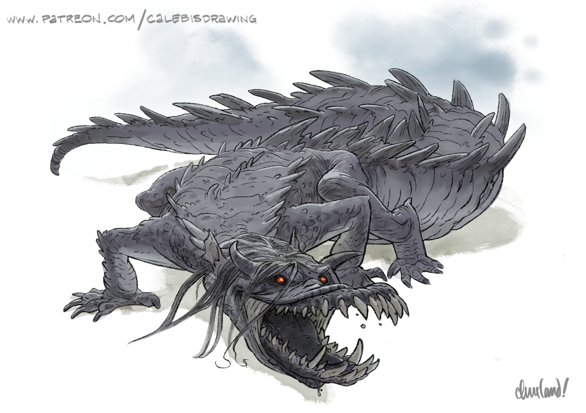
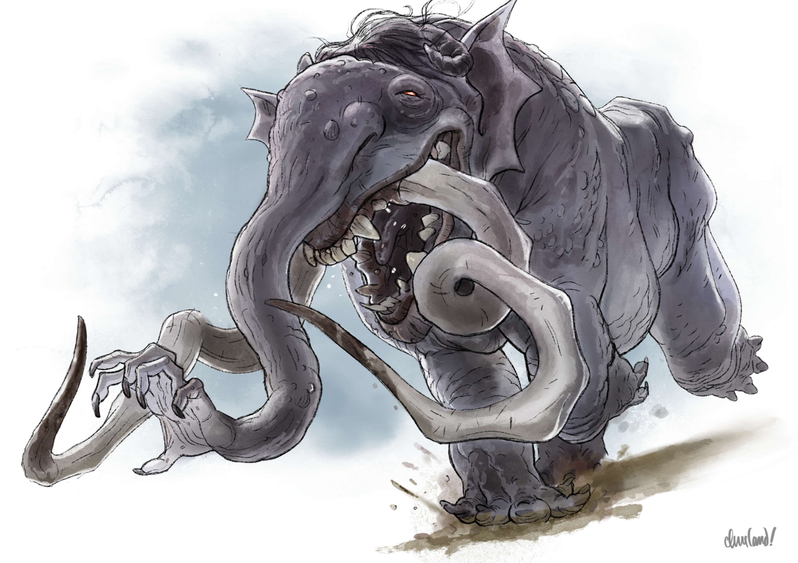
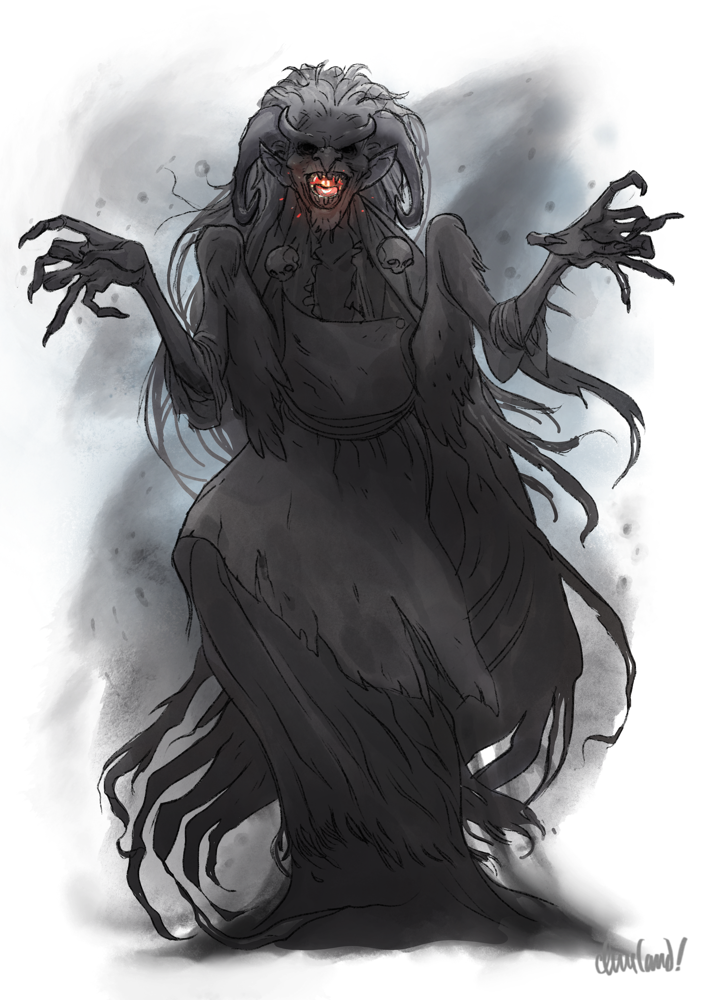
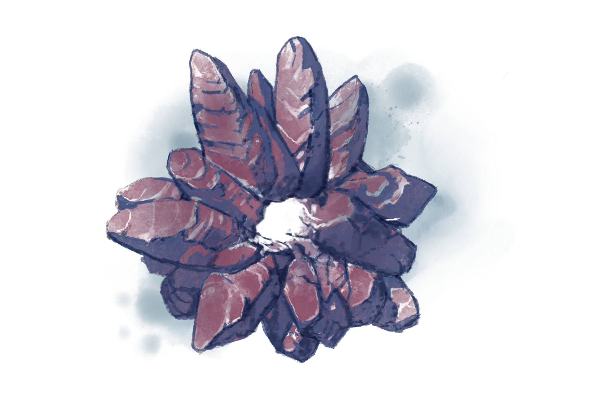
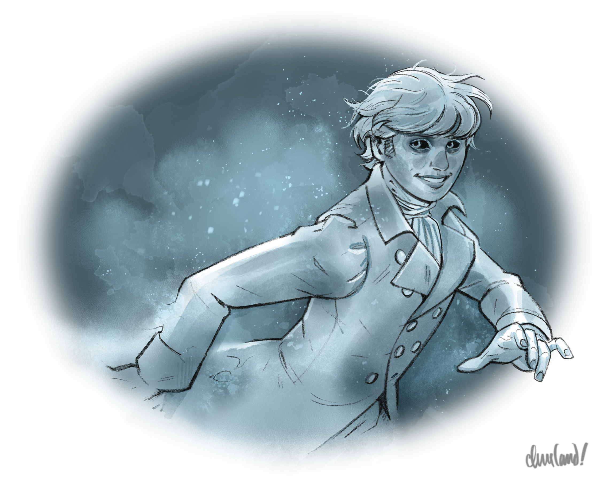
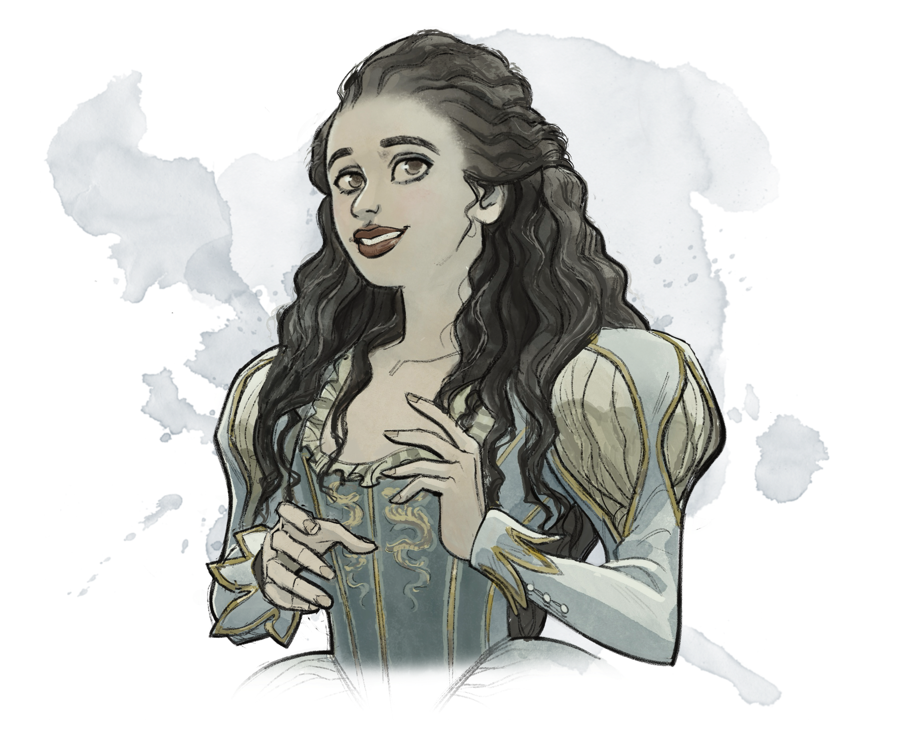

_Uma aventura para cinco personagens de 5º nível._
Neste arco, após uma visitação fantasmagórica no Estalagem Água Azul ou uma barganha cautelosa na mansão do Barão, Victor Vallakovich pede aos jogadores que o ajudem a devolver a alma de Stella Wachter ao corpo dela, encontrando um meio de acessar o Plano Etéreo, onde seu espírito está aprisionado. Para isso, os jogadores precisam ajudar Victor a obter a pedra do coração (heartstone) de uma bruxa noturna até a noite de lua cheia, que ocorrerá no sexto dia depois da chegada dos jogadores a Vallaki.
Caso os jogadores aceitem o pedido de Victor, ele lhes conta que Stella, de seu lugar no Plano Etéreo, viu uma bruxa noturna devorando os sonhos de vários membros do acampamento de refugiados barovianos. Ele os aconselha a visitar o acampamento para investigar a localização da bruxa enquanto ele prepara os rituais necessários para transportar os jogadores ao Plano Etéreo e devolver a alma de Stella ao corpo dela.
No acampamento de refugiados, os jogadores podem descobrir a existência da mascate Morgantha, que vem vendendo regularmente doces dos sonhos aos refugiados e a diversos vallakianos desde que os refugiados chegaram, quase três meses atrás. Lá, os jogadores também podem conhecer Franz, um refugiado viúvo que sofre de uma doença debilitante há duas noites. Franz confessa aos jogadores que vendeu seus filhos, Myrtle e Feodor, a Morgantha dois dias atrás para pagar por seus sonhos, e que agora cumpre a penitência de seus pecados. Os jogadores podem saber pelos refugiados que Morgantha não visita a cidade desde que Franz lhe vendeu as crianças.
Pouco depois de conversar com Franz, os jogadores recebem uma magia de mensageiro (sending) de Victor, convidando-os a retornar ao sótão da mansão do Barão. Lá, Victor lhes apresenta dois caminhos possíveis para obter a pedra do coração da bruxa noturna: podem barganhar com ela para consegui-la, ou podem tentar selá-la em um círculo de vinculação e então matá-la. Se os jogadores escolherem a segunda opção, Victor reunirá livros da biblioteca do pai para pesquisar o círculo de vinculação antes que possam partir para o covil de Morgantha.
Ao concluir sua pesquisa, Victor informa aos jogadores, angustiado, que não conseguiu encontrar um meio de realizar o ritual de vinculação. Stella, porém, pode contar ao grupo que um círculo semelhante, de tamanho enorme, cerca toda a Wachterhaus — algo que ela viu enquanto explorava o Plano Etéreo.
Se os jogadores pedirem a ajuda de Lady Wachter, ela só os auxiliará caso já tenham conquistado seu favor matando Izek Strazni, ou caso consigam convencê-la a baixar o círculo de vinculação em torno da Wachterhaus para permitir que Stella comunique sua presença. Caso contrário, Lady Wachter supõe que eles e Victor estão pregando-lhe uma peça cruel e os dispensa com desprezo.
Se os jogadores conseguirem obter a ajuda de Lady Wachter, ela e quatro de seus fanáticos de culto se juntam ao grupo em uma jornada até o covil de Morgantha, em Velho Triturador de Ossos. Lady Wachter adverte os jogadores de que eles precisarão obter os nomes de todas as bruxas dentro do moinho para poder vinculá-las, para que nenhum membro do coven escape e a ataque, ou a seus cultistas. Assim que os jogadores tiverem obtido os nomes das filhas de Morgantha — e, com sorte, resgatado as crianças aprisionadas dentro do moinho —, Bella Sunbane e Offalia Wormwiggle, Lady Wachter conduz seus cultistas na criação de um enorme círculo de vinculação que prende as bruxas noturnas ao Plano Material, permitindo que os jogadores e Victor as destruam.
Se os jogadores não conseguirem a ajuda de Lady Wachter e optarem, em vez disso, por barganhar com Morgantha o empréstimo de sua pedra do coração, Morgantha concorda em cedê-la sob a condição de que os jogadores prometam entregar mais tarde uma sanguessuga de almas (soul leech) sobre a escrivaninha do camerlengo de Strahd, Rahadin, cuja alma retorcida Morgantha deseja. Como garantia, Morgantha toma os sonhos dos jogadores, impedindo-os de obter os benefícios de um descanso longo caso não cumpram o pedido de Morgantha nos catorze dias seguintes.
Caso os jogadores consigam obter uma pedra do coração por meio de assalto ou negociação, Victor envia o grupo — e Lady Wachter, se ela estiver presente — ao Plano Etéreo para realizar o ritual e defender o espírito de Stella de uma maré de espíritos famintos, decididos a tomar para si o corpo sem alma dela. A horda, porém, não está sozinha, e seu líder — um sádico orador da forca (gallows speaker) dominado pelo espírito de Leo Dilisnya — carrega uma inimizade ancestral pela casa Wachter...
O Destino de Stella Wachter
Três anos atrás, Victor encontrou um grimório na biblioteca do pai, como descrito em N3t. A Oficina de Victor (p. 109). Não era, contudo, um grimório qualquer — era o grimório perdido do próprio lich Khazan, há muito dado como destruído no acidente que causara a morte de Khazan. Victor estudou seus segredos com intensidade, usando as anotações precisas de Khazan e seu próprio intelecto poderoso para dominar muitas das magias contidas nele.
Seis meses atrás, Victor conheceu Stella Wachter, a filha mais nova de Lady Fiona Wachter, enquanto jogava pedras na superfície do Lago Zarovich. Stella e Victor se surpreenderam ao descobrir que compartilhavam um interesse mútuo por magia, mitos e filosofia. Apesar da clara desaprovação dos pais de ambos, os dois logo se tornaram grandes amigos.
Depois de fazer Stella jurar segredo, Victor timidamente lhe mostrou seu grimório e um pouco da magia que era capaz de realizar. Stella ficou fascinada e imediatamente se ofereceu para servir como assistente de pesquisa dele — uma oferta que deixou Victor atônito e lisonjeado.
Quando Strahd despertou de sua hibernação, Victor e Stella concordaram que escapar de sua tirania era imperativo. (Victor também esperava por uma oportunidade de escapar das garras dos pais, enquanto Stella esperava levar a família consigo para fora da Barovia.) Os dois mergulharam juntos em um novo projeto de pesquisa: a construção de um círculo de teletransporte capaz de escapar da Barovia.
Dez semanas atrás, o protótipo do círculo de teletransporte ficou pronto. Depois de os dois realizarem alguns experimentos menores usando coelhos mortos-vivos que Victor animou a partir de ossos de animais, Stella insistiu, empolgada, em um teste vivo e humano, e se ofereceu para ser a primeira. Victor concordou a contragosto — e a tragédia se abateu.
Nem Stella nem Victor poderiam saber, mas as Névoas da Barovia formavam uma barreira metafísica única contra o círculo de teletransporte de Victor. A magia falhou — e o contragolpe psíquico expôs brevemente a alma de Stella às energias brutas do Plano Etéreo.
Ali, o espírito vingativo de Leo Dilisnya, um orador da forca atraído pelo farol mágico da magia de Victor, sentiu a presença de sua inimiga ancestral e atacou, arrancando a alma de Stella de seu corpo.
Antes que Leo pudesse matá-la, porém, o fantasma de Erasmus van Richten a arrebatou depressa, ocultando-a de vista.
De volta ao Plano Material, quando a fumaça e a luz se dissiparam, Victor viu Stella parada, mole, no centro do círculo, os olhos opacos e sem resposta.
Aterrorizado com a possibilidade de o pai descobrir suas habilidades mágicas — ou, pior, culpá-lo pelo destino de Stella —, Victor lhe disse que ela havia ficado catatônica de repente, sem motivo aparente. Vargas, descontente com a presença de Stella desde o início, ficou mais do que satisfeito em ter uma desculpa para se livrar da “garota Wachter”, e ordenou que Izek a devolvesse imediatamente à Wachterhaus. Fiona ficou horrorizada com o destino de Stella e começou a tramar a ruína da família Vallakovich em fúria silenciosa.
Victor passou duas semanas dilacerado pela culpa e pela tristeza até que, estranhamente, um dos criados mencionou ter visto um espírito parecido com Stella no espelho da sala de estar de sua mãe. Foi através do espelho espiritual que Victor descobriu que a alma de Stella ainda vivia no Plano Etéreo — e foi através daquele espelho, comunicando-se por sinais com as mãos e leitura labial, que os dois — agora auxiliados pelo fantasma de Erasmus van Richten — começaram a trabalhar para devolver a alma de Stella ao corpo dela.
Desde então, Victor vem tentando ampliar rapidamente suas habilidades mágicas, seja para de algum modo reaproveitar o defeituoso círculo de teletransporte e restaurar a alma de Stella, seja para se tornar poderoso o bastante para conjurar a magia de alto nível _etereidade_ do grimório de Khazan.
Contudo, Victor, Stella e Erasmus perceberam recentemente que o tempo está se esgotando. O Etéreo Fronteiriço está repleto de outros espíritos errantes, muitos deles bem menos amistosos que a própria Stella, e Erasmus não pode mantê-la em segurança para sempre. Pior ainda, o espírito de Stella parece estar se desvanecendo lentamente, puxado cada vez mais para longe pela atração do Plano Etéreo a cada dia que passa. Se sua alma não for devolvida ao corpo em breve, Stella pode se perder de si mesma — para sempre.
H1. A Súplica de Erasmus
Pouco antes do amanhecer, na primeira noite depois de os jogadores alcançarem o 5º nível, o grupo é despertado durante a noite pelo som de uma janela se escancarando e pela sensação de uma corrente de ar frio enchendo o quarto. Um exame mais atento revela que uma das janelas se abriu de repente, aparentemente por vontade própria. (A janela foi aberta pelo poltergeist de Erasmus van Richten.)
Os jogadores podem notar que as vidraças das janelas que dão para o quarto ficaram cobertas de gelo, e que a respiração deles agora embaça o ar gelado. Pouco depois, vários objetos no quarto começam a levitar, e as venezianas das janelas começam a chacoalhar. Enquanto isso acontece, um dedo invisível começa a inscrever uma mensagem na geada de uma das janelas: Ajudem Victor. Depois de um instante, acrescenta — quase hesitante — Por favor.
Se os jogadores perguntarem o nome do espírito, ele escreve o próprio nome na geada: Erasmus. Se os jogadores concordarem em atender ao pedido, os objetos caem no chão e as venezianas param de chacoalhar, com a geada evaporando lentamente. O espírito de Erasmus então parte.
Enquanto o espírito de Erasmus está presente, um jogador que passar em um teste de Sabedoria (Intuição ou Percepção) CD 10 percebe uma presença fantasmagórica no quarto — uma presença que reluz com inocência e com uma determinação feroz.
Os jogadores podem descobrir com Urwin Martikov, Danika Dorakova, o Padre Lucian Petrovich ou Lady Fiona Wachter que “Victor” é o nome do filho adolescente do Barão Vallakovich.
H2. A Mansão do Burgomestre
Esta cena acontece no Capítulo 5: Área N3t.
Se os jogadores tiverem recebido H1. A Súplica de Erasmus e pedirem para falar com Victor, o Barão Vallakovich permite que o façam com um teste de Carisma (Persuasão ou Enganação) CD 12 bem-sucedido, ou automaticamente se o bajularem o bastante ou se Lady Wachter já tiver tomado o poder.
Se os jogadores descreverem a visitação de Erasmus a Victor, ele lança um olhar ao espelho espiritual em sua oficina e diz, soando magoado: “Eu não disse a vocês que estava com tudo sob controle?”
Um momento depois, o rosto de Victor se suaviza, e ele conta a contragosto aos jogadores que “Stella” e “Erasmus” decidiram que ele precisa de ajuda, e que talvez não estejam de todo errados. Ele então pergunta aos jogadores se estariam dispostos a ajudá-lo, a “Stella” e a “Erasmus” — o espírito que encontraram — com uma tarefa em particular.
O Que Victor Sabe
Se os jogadores demonstrarem interesse em ajudá-lo, Victor primeiro os apresenta ao espírito de Stella por meio do reflexo dela no espelho espiritual. Stella os cumprimenta com um aceno tímido, mas não pode ser ouvida. (Victor explica que a alma dela está presa no Plano Etéreo e que, embora o espelho reflita formas do outro plano, ele não transmite som.)  "Stella Wachter's Ghost" por Caleb Cleveland. Apoie-o no Patreon!
"Stella Wachter's Ghost" por Caleb Cleveland. Apoie-o no Patreon!
Victor então compartilha as seguintes informações:
- Três meses atrás, Victor e sua amiga, Stella Wachter, ouviram que o Diabo Strahd havia retornado à terra e concordaram que fugir era imperativo. Usando conhecimentos que Victor havia extraído de um velho grimório, os dois começaram a construir um círculo de teletransporte que lhes permitiria se libertar do vale.
- Dez semanas atrás, eles finalmente concluíram um protótipo do círculo. Depois de dois experimentos envolvendo coelhos mortos-vivos que Victor animou usando ossos comprados de Szoldar e Yevgeni, Stella insistiu em se voluntariar para um teste vivo e humano. Contudo, o teste deu terrivelmente errado — o círculo não teletransportou o corpo de Stella a lugar algum, e o contragolpe expôs a alma dela ao Plano Etéreo.
- Durante os breves momentos em que seu espírito esteve no Plano Etéreo, Stella foi atacada por uma sombra escura, cujas garras arrancaram sua alma de seu corpo. Ela teria morrido se Erasmus não a tivesse levado para um lugar seguro.
- Depois de duas semanas temendo ter de algum modo destruído acidentalmente a mente da amiga, Victor soube que um dos criados de seus pais havia visto o fantasma de uma jovem refletido em um espelho na sala de estar de sua mãe. Victor descobriu que o espelho era um espelho espiritual, que refletia tanto o Plano Material quanto o Plano Etéreo. Usando-o, ele conseguiu ver e se comunicar com o espírito errante de Stella — primeiro por gestos e leitura labial rudimentar e, por fim, por sinais com as mãos aprendidos em um livro da biblioteca de seu pai.
- Desde então, Victor e Stella vêm trabalhando arduamente para devolver a alma dela ao corpo, mas nada funcionou. Enquanto isso, Stella tem precisado se esconder dos muitos espíritos errantes que vagam pelo Etéreo Fronteiriço, muitos dos quais lhe fariam mal se pudessem.
- Stella sente que está lentamente perdendo as lembranças de sua vida, ao mesmo tempo em que sua forma no Plano Etéreo se torna cada vez mais insubstancial. Às vezes, ela não consegue dizer se é ela mesma ou outra pessoa; quando isso acontece, ela sente como se uma parte de si estivesse encolhida em um lugar quente e úmido, com um batimento cardíaco reconfortante ecoando pela escuridão.
- Para piorar as coisas, o cordão entre as escápulas de Stella, que outrora ligava sua alma ao seu corpo, vai encurtando aos poucos, o que faz Victor temer que reste a ela pouco mais de uma semana antes de desaparecer para sempre. (Quanto mais curto ele fica, mais frequentes se tornam as visões de Stella e mais nebulosa fica sua memória.)
- Nem Victor, nem Stella, nem Erasmus conhecem a identidade do espírito que arrancou a alma de Stella de seu corpo. Contudo, Victor pode informar aos jogadores que Erasmus o viu assombrando o Plano Etéreo ao redor de Vallaki inúmeras vezes desde sua chegada — aparentemente à procura de Stella — e o identificou como um orador da forca. (Erasmus, que ficou sabendo dessas criaturas ao ler as anotações do pai, forneceu a Victor todas as informações sobre oradores da forca apresentadas na p. 234 de Van Richten's Guide to Ravenloft.)
- Se lhe perguntarem por que não procuraram a ajuda de outras pessoas, Victor insiste teimosamente que não confia em Lady Fiona Wachter; que seu próprio pai, o Barão, seria pior do que inútil; e que ele e Stella são perfeitamente capazes de resolver o problema dela por conta própria.
Se for confrontado com o fato de que ele e Stella não têm sido capazes de resolver o problema dela por conta própria, o rosto de Victor se desfaz, e ele parece por um instante à beira das lágrimas enquanto luta para encontrar uma resposta.
Victor se surpreende ao ouvir sobre as “assombrações” que sua família tem vivido nos andares inferiores da mansão. Contudo, o espírito de Stella — com ar acanhado — usa sinais com as mãos para comunicar que jamais teve a intenção de assustar ninguém, mas que, depois de descobrir por acidente que conservava alguma pequena capacidade de interagir com o Plano Material, não conseguiu resistir a pregar uma peça ocasional em alguma vítima desavisada. (Se os jogadores perguntarem por que ela não usou essa habilidade para se comunicar com sua mãe, Lady Wachter, Stella confessa que alguma força estranha a impede de entrar nos terrenos da propriedade.)
Se os jogadores concordarem em ajudá-lo e a Stella, Victor compartilha com eles o seguinte plano:
- Para guiar a alma de Stella de volta ao corpo dela, ele precisa encontrar uma forma de entrar no Plano Etéreo em seu próprio corpo mortal e realizar uma versão alterada do ritual de teletransporte do outro lado do véu.
- Existe uma magia — etereidade (etherealness) — que lhe permitiria entrar no Plano Etéreo usando seu próprio poder, mas, apesar de todos os seus esforços, ele não conseguiu dominá-la até agora, e é improvável que consiga conjurá-la antes que a alma de Stella desapareça no Etéreo Profundo.
- No livro Ethereal Entities: Denizens of the Unseen Realm, escrito pelo arquimago Mordenkainen, Victor descobriu um ritual capaz de replicar os efeitos da magia etereidade para até nove criaturas. O ritual deve ser realizado na noite de lua cheia e exige a pedra do coração de uma bruxa noturna como componente material.
Quando É a Lua Cheia?
A primeira lua cheia dos jogadores na Barovia sempre ocorre na noite de seu sexto dia completo em Vallaki. (Por exemplo, se os jogadores chegarem a Vallaki em uma noite de domingo, a lua cheia acontecerá na noite de sábado.) Victor sabe dessa data.
Victor informa aos jogadores que Stella, enquanto explorava o Plano Etéreo, tem visto com regularidade uma figura feminina esquálida, de pele acinzentada e azulada, olhos fundos, cabelos emaranhados, pequenos chifres de carneiro e uma boca larga cheia de dentes afiados e amarelados, rondando a área do Etéreo Fronteiriço que se sobrepõe ao acampamento de refugiados barovianos. Embora nem Victor nem Stella tenham certeza do que a bruxa noturna quer com os refugiados, Victor está convicto de que a descrição de Stella corresponde perfeitamente à aparência de uma bruxa noturna conforme descrita no livro de Mordenkainen.
Victor pede aos jogadores que visitem o acampamento de refugiados e investiguem a presença da bruxa noturna. Embora Stella só a tenha visto no Plano Etéreo até agora, Victor suspeita fortemente que o interesse dela se estende também ao Plano Material. Enquanto os jogadores investigam, Victor continuará sua pesquisa sobre o ritual de etereidade e sobre o ritual para devolver a alma de Stella ao corpo dela.
Se demonstrarem interesse, Victor tem prazer em emprestar aos jogadores seu exemplar de Ethereal Entities para leitura.
Ethereal Entities
_Ethereal Entities: Denizens of the Unseen Realm_, de Mordenkainen, é um livro fino de capa dura, revestido de couro tingido de um azul profundo, cor de meia-noite. O título e o nome do autor estão gravados em relevo, em letras prateadas, ao longo da lombada e da capa, e os cantos do livro são adornados por pequenas filigranas de prata que lembram fiapos etéreos. Suas páginas são preenchidas por um texto de caligrafia esmerada e por ilustrações lindamente detalhadas.
O livro é um tratado sobre o Plano Etéreo e as criaturas que nele habitam ou o visitam. Contém todas as informações apresentadas em Plano Etéreo (Dungeon Master's Guide, p. 48), além de um bestiário dividido nas três seções a seguir:
- _Etherborn: Natives of the Deep Ethereal_ (Nascidos do Éter: Nativos do Etéreo Profundo), com informações sobre criaturas que supostamente habitam apenas o Etéreo Profundo, como os mitológicos demônios-da-névoa (mistfiends), sombras-etéreas (ethershades) e cintilantes (shimmerlings).
- _Phantomfolk: Travelers from the Border Ethereal_ (Povo Fantasma: Viajantes do Etéreo Fronteiriço), com informações sobre criaturas incorpóreas que habitam o Etéreo Fronteiriço e frequentemente cruzam para o Plano Material, como os fantasmas (_Monster Manual_, p. 147) e os guerreiros fantasmas (_Curse of Strahd_, p. 235).
- _Veil-Walkers: Visitors to the Ethereal_ (Caminhantes do Véu: Visitantes do Etéreo), com informações sobre criaturas físicas capazes de cruzar para o Plano Etéreo, como as bruxas noturnas (_Monster Manual_, p. 178), os pesadelos (_Monster Manual_, p. 235) e as aranhas de fase (_Monster Manual_, p. 334). (Veja Matronas da Malevolência, abaixo, para o capítulo sobre bruxas noturnas.)
A subseção sobre as aranhas de fase traz uma breve nota lateral a respeito da imunidade que a maioria dos mortos-vivos incorpóreos possui a dano elemental, natural e de armas não mágicas enquanto estão no Plano Material, bem como sobre os meios naturais que as aranhas de fase desenvolveram para contornar essas imunidades por meio de suas presas e de seu veneno. A nota observa que um conjurador pode causar dano normalmente a um espírito incorpóreo usando a presa de uma aranha de fase como componente material adicional ao conjurar suas magias, enquanto um combatente marcial pode causar dano a um espírito incorpóreo untando uma arma ou até três projéteis de munição com veneno de aranha de fase ou água benta.
A subseção sobre as bruxas noturnas traz uma breve nota lateral sobre um ritual que usa a pedra do coração de uma bruxa noturna e as energias de uma linha ley para replicar os efeitos da magia Etereidade para até dez indivíduos, por uma hora, na noite de lua cheia.
O capítulo referente às bruxas noturnas se intitula "Night Hags: Matrons of Malevolence" (Bruxas Noturnas: Matronas da Malevolência). Ele diz o seguinte:
Astutas e subversivas, as bruxas noturnas são a personificação da perversidade. Representam tudo o que há de mau e cruel no mundo e nada desejam mais do que ver os virtuosos se voltarem para a vilania: o amor transformado em obsessão, a bondade em ódio, a devoção em indiferença e a generosidade em egoísmo.
Outrora, as bruxas noturnas eram criaturas do Feywild, um reino de encantamento e beleza. Contudo, sua vileza fez com que fossem exiladas há muito tempo para o reino desolado de Hades, onde degeneraram em demônios. A mácula imunda de Hades retorceu sua natureza outrora feérica, e há muito as bruxas noturnas espalham sua malevolência pelos Planos Inferiores.
Embora as bruxas noturnas lembrem anciãs ressequidas, não há nada de mortal nelas. Seus rostos murchos são emoldurados por longos cabelos esgarçados e por chifres retorcidos de carneiro; verrugas e sinais horrendos salpicam sua pele manchada de azul-pálido; e seus dedos longos e finos terminam em garras capazes de rasgar a carne com um simples toque.
Todas as bruxas possuem poderes mágicos, incluindo a capacidade de alterar a própria forma ou de amaldiçoar seus inimigos. Uma bruxa também tem certa resistência tanto à magia quanto às armas mortais, embora o toque da prata a fira como a qualquer outra criatura.
Arrogantes ao extremo, as bruxas se creem as mais astutas das criaturas — e muitas vezes o são. Estão abertas a negociar com mortais e sempre cumprem sua palavra, mas uma barganha com uma bruxa é sempre perigosa. As bruxas se deleitam em ver mortais provocarem a própria ruína por meio desses acordos, que costumam envolver o comprometimento de seus princípios ou a renúncia a algo querido.
O prêmio supremo de uma bruxa noturna, contudo, é a alma de um mortal corrompido. Enquanto sua vítima dorme, a bruxa noturna passa ao Plano Etéreo com o auxílio de sua retorcida pedra do coração de ônix — um artefato que lhe permite tornar-se etérea na velocidade do pensamento. Ali, ela invade os próprios sonhos da vítima, enchendo-lhe a cabeça de dúvidas e medos na esperança de induzi-la a cometer atos malignos no mundo desperto.
Noite após noite, ela prossegue com suas visitas até que a vítima finalmente expire durante o sono — momento em que a bruxa aprisiona sua alma corrompida em seu saco de almas, como um troféu sombrio de seu êxito. Quanto mais negras as manchas sobre a alma, maior a recompensa da bruxa noturna.
Como todas as bruxas, as bruxas noturnas se propagam raptando e devorando bebês humanos. Uma semana depois, a bruxa dá à luz uma filha que parece humana até seu décimo terceiro aniversário — momento em que a criança se transforma no retrato cuspido de sua mãe bruxa.
Algumas bruxas criam as filhas que geram, formando covens que ampliam seu poder. As integrantes de um coven ganham uma série de habilidades antinaturais, incluindo o poder de controlar os elementos e — uma vez por dia — de dissipar magia estranha nas cercanias de seus covis. Como acontece com toda magia de bruxa, porém, tal poder tem um preço: um ferimento sofrido por uma única bruxa de um coven é sofrido por todas.
Para combater sua natureza inerentemente egoísta, as bruxas de um coven precisam firmar um contrato escrito entre si, assinado com o verdadeiro nome de cada bruxa. As bruxas de um coven guardam esse contrato com ciúme, muitas vezes selando-o no coração de seu covil, sempre atentas para impedir que seus nomes caiam em mãos inimigas.
Colhendo Aranhas de Fase
Mais tarde, os jogadores encontrarão aranhas de fase em Argynvostholt e terão a oportunidade de colher suas presas e seu veneno para combater os guerreiros fantasmas que espreitam por lá. Veja Arco M - O Solar do Dragão para mais informações sobre a colheita e o uso de partes de aranha de fase.
H3. O Acampamento de Refugiados
Se já se passaram pelo menos seis horas desde a posse de Lady Wachter em Arco F - O Desejo de Lady Wachter, o acampamento de refugiados foi transferido para a N8. Praça da Cidade (p. 119). (Os refugiados, contudo, ainda vivem em tendas, enquanto Lady Wachter trabalha para lhes encontrar moradia adequada.)
Se Lady Wachter ainda não transferiu os refugiados, quando os jogadores entrarem pela primeira vez no acampamento, leia:
Passando os portões de Vallaki, há um aglomerado de tendas caindo aos pedaços, encolhidas contra a muralha, como se buscassem abrigo sob a silhueta imponente das paliçadas da cidade. As tendas se dispõem em uma via simples de dois lados, com barricadas rudimentares de madeira e valas lamacentas do outro lado, voltadas para a floresta escura mais além.
Por frestas na lona puída, vocês veem estrados toscos de madeira, sacos de dormir improvisados e, aqui e ali, uma panela amassada. Pequenas fogueiras de cozinha, ardendo baixo, salpicam a viela estreita e imunda, e pilhas de gravetos e troncos semiapodrecidos repousam desordenadamente ao lado delas.
Dezenas de pessoas, os corpos esquálidos e os rostos abatidos, movem-se lentamente pelo acampamento. Seus olhos estão fundos e vazios, e as roupas pendem frouxas sobre os corpos magros. Alguns se amontoam ao redor das fogueiras, os corpos curvados contra o ar gelado e as mãos estendidas em busca do calor escasso.
H3a. Dentro do Acampamento
Se os jogadores entrarem no acampamento, logo são recebidos com cautela por Emeric, um homem mais velho e melancólico, de cabelos grisalhos, e por Magda, uma jovem tomada pela dor, ambos com fundas olheiras. (Embora o acampamento não tenha nenhuma liderança oficial, Emeric e Magda faziam parte da primeira leva de refugiados vindos da Barovia e foram os pioneiros no esforço de acolher e organizar os recém-chegados após o cerco de Strahd.)
Emeric e Magda desconfiam de forasteiros, mas estão curiosos para saber por que os jogadores vieram ao acampamento. (Magda por um instante se enche de esperança de que os jogadores sejam servos do Barão Vallakovich e tenham vindo convidar os refugiados a entrar em Vallaki — esperança da qual Emeric logo a desengana, apontando para a aparência estranha dos jogadores.)
Emeric e Magda podem compartilhar as seguintes informações gerais sobre o acampamento (modificadas conforme necessário, dependendo dos acontecimentos atuais):
- Os primeiros refugiados barovianos chegaram aos portões de Vallaki três meses atrás, mas foram impedidos de entrar. Quando tentaram arrombar os portões à força, os guardas convocaram um homem a quem chamavam de Izek, que ostentava um braço demoníaco retorcido e conjurou fogo para repelir os refugiados.
- Desde então, os refugiados montaram acampamento fora das muralhas da cidade, aglomerando-se em busca de proteção e calor. Conseguiram garantir algumas necessidades menores, como as tendas, subornando os guardas dos portões, mas não conseguiram convencê-los a permitir sua entrada nem mesmo a chamar o Barão da cidade para discutir sua situação.
- Enxames de morcegos e alcateias de lobos atormentam o acampamento todas as noites desde que chegaram. Felizmente, ninguém morreu ainda, mas vários refugiados ficaram feridos.
- Por causa das perdas que sofreram na estrada e da ameaça do Diabo no Castelo Ravenloft, os refugiados não estão dispostos a arriscar a viagem de volta para casa; em vez disso, esperam aguardar até que o Barão caia em si e os deixe entrar nas muralhas.
- Cerca de um quarto dos refugiados se tornou dependente dos "doces dos sonhos", um alimento vendido pela mascate Morgantha. Esses refugiados buscam uma fuga da miséria e do desespero de sua situação. Quem come um doce dos sonhos cai em um transe conforme descrito em Doces dos Sonhos (p. 125). (Emeric e Magda podem acrescentar que Morgantha não aparece no acampamento há alguns dias.)
Se os jogadores perguntarem sobre a bruxa noturna, Emeric e Magda trocam olhares e informam que a descrição corresponde à de um pesadelo recorrente que Franz, outro refugiado, vem sofrendo nas últimas duas noites.
Emeric e Magda ficam contentes em levar os jogadores até ele, mas os advertem de que Franz, um viúvo, perdeu recentemente também os filhos e provavelmente ainda está de luto ou perturbado. Magda acrescenta que Franz sofre de uma estranha doença debilitante desde que os pesadelos começaram, e expressa sua esperança de que os jogadores consigam tratá-lo.
H3b. A Tenda de Franz
Emeric e Magda conduzem os jogadores até uma tenda pequena e solitária, montada no fim da viela lamacenta do acampamento. Quando os jogadores entrarem, leia:
Dentro desta tenda apertada e caída há três estrados manchados, dois deles do tamanho de crianças. Um coelho de pelúcia velho e remendado jaz sobre o estrado mais próximo, os olhos de botão preto encarando o vazio, sem ver nada.
Uma jovem está ajoelhada na lama ao lado do estrado de tamanho adulto, apertando um punhado de ervas murchas em uma das mãos e segurando um pano úmido sobre a testa de um homem frágil e macilento deitado no estrado. A pele do homem é pálida e encharcada de suor, e suas roupas estão rasgadas e esfarrapadas. Fios ralos e desgrenhados de cabelo brotam de seu couro cabeludo enrugado, enquanto seu rosto, iluminado pela luz agonizante de uma única vela crepitante, está marcado pela exaustão. Passa-se um bom momento antes que vocês percebam que esse fantasma de homem provavelmente mal passa dos trinta anos.
O homem é Franz. A mulher é sua irmã, uma mulher chamada Nyanka. Nyanka cuida de Franz desde a manhã, mas não conseguiu identificar nem tratar sua condição.
Ao ver os jogadores, Franz solta uma risada chiada e pergunta se eles são demônios enviados por Mãe Noite, vindos para arrastar sua alma para as Névoas. Nyanka se desculpa pelo comportamento dele e comenta que ele anda delirante desde que os pesadelos e a doença começaram.
Se os jogadores perguntarem a Franz sobre a bruxa noturna, ele primeiro exige que Nyanka, Emeric e Magda saiam e o deixem a sós com os jogadores. (Nenhum dos três outros refugiados se importa com o pedido.) Franz pode então compartilhar as seguintes informações com os jogadores:
- Três meses atrás, pouco depois de sua esposa, Alana, morrer de doença, Franz se juntou às primeiras duas dúzias de refugiados que deixaram a vila de Barovia rumo à cidade fortificada de Vallaki, a oeste. Franz trouxe os dois filhos do casal — Fyodor, de sete anos, e Myrtle, de cinco — consigo para Vallaki, na esperança de mantê-los a salvo dos servos de Strahd.
- Algumas semanas depois de chegar ao acampamento, Franz começou a comprar doces dos sonhos da mascate Morgantha. As visões trazidas por esses doces lhe permitiam sonhar com Alana, de volta aos seus braços como se jamais tivesse morrido.
- Franz comprava os doces dos sonhos de Morgantha regularmente, passando horas, e depois dias, perdido em sonhos serenos. Por fim, contudo, suas economias se esgotaram, e Morgantha se recusou a lhe vender mais doces — a menos que ele pagasse um preço terrível.
- Três noites atrás, Franz levou Fyodor e Myrtle para além da linha das árvores, na borda da mata. Ali, Morgantha lançou as crianças em um sono mágico e as enfiou em um saco que carregava sobre o ombro. Em troca, prometeu a Franz tantos doces dos sonhos quantos ele conseguisse comer, a cada vez que voltasse, pelo resto da vida dele.
- Quando Morgantha se virou para partir, Franz ouviu Myrtle chamar por ele durante o sono e imediatamente se arrependeu do que havia feito. Exigiu que Morgantha devolvesse seus filhos naquele instante; quando ela riu e lhe disse que a barganha era definitiva, ele tentou tomar as crianças à força. Com um gesto das mãos, porém, ela o fez adormecer — e, quando ele acordou, ela não estava em lugar algum.
- Franz vasculhou a mata por horas, mas não encontrou vestígio algum de Morgantha ou de seus filhos. Quando finalmente desabou, exausto, de volta à sua tenda no acampamento, sofreu pesadelos terríveis, que se repetiram todas as noites desde então.
- No pesadelo, ele está amarrado a uma mó de moinho, com seus quatro braços erguidos acima dele. Sobre seu peito está sentada uma figura feminina esquálida, de pele acinzentada e azulada, olhos fundos, cabelos emaranhados, pequenos chifres de carneiro e uma boca larga cheia de dentes afiados e amarelados, pressionando uma pedra retorcida, negra como ônix, contra sua testa e sussurrando sobre condenação. Ao fundo, ele ouve Fyodor e Myrtle soluçando fora de seu campo de visão, um par de risadinhas estridentes e o som das pás de um moinho de vento rangendo ao vento.
- Durante todo o pesadelo, Franz fica paralisado, incapaz de desviar o olhar ou sequer mover um músculo. A cada vez que desperta, seu corpo definha diante de si. (Morgantha não voltou ao acampamento desde o primeiro pesadelo.)
Com voz rouca, Franz implora aos jogadores que salvem Fyodor e Myrtle das garras de Morgantha. Embora acredite que sua condição atual seja uma maldição enviada pelos deuses como punição por seus pecados e acolha a penitência da morte, ele acredita que seus filhos não merecem o sofrimento que Morgantha provavelmente lhes inflige. Ele não pode oferecer aos jogadores ouro nem tesouro algum por seus esforços — apenas sua gratidão.
Se os jogadores perguntarem, Franz pode lhes dizer que sua irmã Nyanka, que atualmente acredita que as crianças foram devoradas por lobisomens no Svalich Wood, ficaria feliz em cuidar delas enquanto ele se recupera. "Eu sei que não mereço ser pai deles", ele arqueja, com lágrimas escorrendo dos olhos. "Só o que eu quero é vê-los seguros e felizes."
Antes que os jogadores deixem a tenda de Franz, ele agarra o mais próximo deles e arqueja: "Eu conseguia sentir — o coração do moinho — três corações negros batendo como um só dentro da mó embaixo de mim. O braço retorcido guarda a chave." Em seguida, ele desaba, caindo em um sono profundo e agitado.
O Destino de Franz
Os jogadores podem identificar a natureza da condição atual de Franz consultando Ethereal Entities ou pedindo ao Dr. Rudolph van Richten um diagnóstico de seus sintomas. Se consultado, Van Richten informa aos jogadores que a única forma verdadeira de encerrar a assombração de pesadelos de uma bruxa noturna é matar a própria bruxa ou fechar uma barganha com ela.
H4. O Plano de Victor
Esta cena acontece no Capítulo 5: Área N3t.
Enquanto os jogadores deixam o acampamento de refugiados, um deles recebe a seguinte magia de mensageiro de Victor: “Vocês a encontraram? Voltem ao sótão. Eu tenho um plano.”
Quando os jogadores retornam à oficina de Victor na mansão do Burgomestre, ele lhes fornece as seguintes informações:
- Existem duas maneiras possíveis de obter a pedra do coração de uma bruxa noturna: de bom grado ou à força.
- Para obtê-la de bom grado, os jogadores provavelmente precisarão negociar algo de grande valor em troca do empréstimo da pedra do coração. As bruxas são negociadoras lendárias, e pode-se confiar que cumprirão a palavra ao pé da letra — mas apenas ao pé da letra.
- Para obter a pedra do coração à força, os jogadores precisarão incapacitar ou matar a bruxa. Contudo, isso é bem mais difícil, por vários motivos. Primeiro, as bruxas costumam se reunir em covens de três, uma prática que torna cada bruxa mais forte e lhes garante acesso fácil a aliadas. (Victor pergunta nervosamente aos jogadores se há notícia de que a bruxa tenha “irmãs” ou “filhas”.) Segundo, as bruxas noturnas em particular podem usar suas pedras do coração para fugir ao Plano Etéreo assim que se sentem ameaçadas — um mecanismo de escape que não pode ser neutralizado.
- Para impedir que a bruxa escape para o Plano Etéreo no meio do combate, os jogadores precisarão selá-la em um círculo de vinculação antes de iniciar as hostilidades. Victor também aconselha os jogadores a obter armas prateadas, que serão necessárias para superar as fortes defesas demoníacas das bruxas.
O Coração do Moinho
Se os jogadores contarem a Victor sobre as palavras de Franz, ele reconhece na "pedra retorcida, negra como ônix" a descrição da pedra do coração de uma bruxa noturna apresentada em Ethereal Entities.
Victor não sabe ao certo o que Franz quis dizer com "o coração do moinho". (Ele tem certeza de que não é uma pedra do coração, porque as bruxas noturnas sempre carregam as suas consigo.)
Victor se lembra de ter visto informações sobre o moinho em um velho livro de registros na biblioteca de seu pai. (Victor se lembra do livro com amargura, porque Vargas o obrigou a escrever um relatório sobre a história de Vallaki como castigo quando Victor falou mal do fundador da cidade, Boris Vallakovich.)
Ao recuperar o livro, Victor o abre e revela uma planta do moinho, ao lado da concessão original de terras do Barão Boris Vallakovich a Gustav e Elisabeth Durst. Ele aponta, empolgado, que o projeto da mó contém um compartimento embutido em sua lateral — provavelmente como espaço de armazenamento. Se as bruxas estiverem escondendo algo além de uma pedra do coração no moinho, é provável que esteja nesse compartimento.
O Ritual de Vinculação
Victor informa aos jogadores, angustiado, que não conseguiu encontrar um meio de realizar o ritual de vinculação. Abrindo a página relevante de seu grimório, ele lhes mostra uma ilustração que retrata um círculo de vinculação, mas reclama que o livro em si não traz informação alguma sobre como de fato criar um.
Pouco depois, o espírito de Stella pode ser visto gesticulando com entusiasmo no espelho espiritual. Enquanto interpreta os sinais dela, os olhos de Victor se arregalam e seu rosto empalidece. “Você não pode estar falando sério”, ele gagueja. “De jeito nenhum!”
Se for confrontado pelos jogadores, Victor revela a contragosto que Stella afirma ter visto um círculo de vinculação semelhante enquanto explorava o Plano Etéreo, mas em uma escala muito maior: um círculo enorme que cerca toda a Wachterhaus e a impede de entrar nos terrenos. (Stella vem tentando entrar na propriedade para se comunicar com a mãe, mas fracassou por causa da presença do círculo.) Stella suspeita que sua mãe, Lady Wachter, talvez saiba como criar um para vincular as bruxas também.
Stella, por meio de Victor, sugere que os jogadores visitem a Wachterhaus para pedir a ajuda de Lady Wachter na vinculação das bruxas noturnas. Stella os adverte de que sua mãe é uma mulher cautelosa e cética, sobretudo no que diz respeito aos Vallakovich; se Lady Wachter não acreditar na história dos jogadores, eles provavelmente precisarão pedir que ela desative o círculo protetor da Wachterhaus para permitir que Stella manifeste sua presença.
O Círculo Protetor da Wachterhaus
_A Traição de Leo Dilisnya._ Strahd von Zarovich fez muitos inimigos ao longo de suas muitas conquistas. Um deles foi um homem chamado Leo Dilisnya, que odiava Strahd pela morte de seu irmão, Reinhold Dilisnya, capitão de um pelotão que Strahd deliberadamente enviara para a morte a fim de vencer uma batalha contra a Ordem do Dragão Prateado.
Quando Strahd se estabeleceu no Castelo Ravenloft, Leo — membro dos Ba’al Verzi, uma misteriosa guilda de assassinos — começou a tramar sua vingança. Na esperança de obter acesso mais próximo a Strahd, Leo tornou-se guarda do castelo, vestindo as cores dos Von Zarovich enquanto preparava o momento certo de atacar.
Esse momento finalmente chegou na manhã do casamento de Sergei. Com toda a atenção voltada para a ruborizada futura noiva, Leo se disfarçou com roupas de assassino e escalou a alvenaria para alcançar os aposentos privados de Strahd. Mesmo pego de surpresa, porém, Strahd foi mais do que páreo para Leo, desarmando-o de sua lâmina amaldiçoada dos Ba’al Verzi e fazendo-o fugir pela janela.
_Uma Nova Oportunidade._ Amargo e enfurecido, Leo se escondeu em seus aposentos para lamber as feridas — até saber que Sergei havia sido encontrado assassinado em seus aposentos e que Strahd perseguira Tatyana até os jardins, jurando tomá-la em casamento. Vendo ali uma oportunidade imediata, Leo reuniu um contingente da guarda do castelo e os incitou a atacar Strahd em vingança pela morte do amado príncipe Sergei.
Contudo, a trama de Leo não ficou sem oposição. A irmã mais velha de Leo, Lovina Wachter née Dilisnya — agora esposa de Vladislav Wachter —, liderou a guarda pessoal de sua família em defesa de Strahd. Os guardas traidores de Leo empurraram os Wachter até o K62. Salão dos Criados, matando o marido de Lovina e chacinando muitos de seus parentes. Ali, Lovina e sua família se abrigaram junto a Katarina, uma criada do castelo e (sem que Strahd soubesse) sua meia-irmã secreta, na K65. Cozinha (p. 78).
Quando Strahd se ergueu como vampiro, Leo fugiu para a K23. Entrada dos Criados (p. 59), desceu pelo K62. Salão dos Criados e atravessou o K67. Salão dos Ossos (p. 78) até o K68. Corredor dos Guardas (p. 79). Enquanto perseguia Leo, Strahd massacrou os guardas que aterrorizavam os Wachter e — em um raro momento de lucidez — agradeceu aos Wachter por sua lealdade e permitiu que Lovina e Katarina partissem em paz. Enquanto Strahd banhava a pedra do Castelo Ravenloft no sangue da guarda do castelo — tanto dos inocentes quanto dos traidores —, os espíritos deles se fundiram na morte para formar um terrível orador da forca (Van Richten’s Guide to Ravenloft, p. 234), que assombraria o Castelo Ravenloft por muitos anos.
_O Castigo de Leo._ Leo conseguiu escapar do Castelo Ravenloft junto com meia dúzia dos guardas traidores. Anos depois, contudo, com a ajuda de Lovina, Strahd rastreou Leo até os corredores escurecidos da então abandonada Abbey of Saint Markovia.
Strahd transformou Leo em um vampiro servo e, com a aprovação de Lovina, o sepultou em um mausoléu sob o solar dos Wachter, onde sofreria por seus crimes por toda a eternidade. Como salvaguarda, caso Leo de algum modo escapasse, Strahd forjou para Lovina um amuleto mágico de rubi que, quando quebrado, mataria Leo instantaneamente.
_Entra Fiona Wachter._ Séculos se passaram, e Fiona Wachter nasceu, filha de Balthazar e Lavinia Wachter e irmã mais nova de Frederich Wachter. Embora os pais de Fiona jamais lhe tenham contado a verdadeira natureza do vampiro selado sob a propriedade, eles frequentemente lhe falavam do “monstro do porão” que se alimentava de crianças desobedientes e a proibiam de entrar no subsolo.
Aos dezesseis anos, a adolescente Fiona teve uma discussão explosiva com os pais e o irmão. Em sua fúria, Fiona derrubou uma estante de porcelanas finas e joias — incluindo, entre elas, o amuleto mágico que Strahd forjara certa vez para Lovina Wachter. Embora Fiona não soubesse da existência de Leo nem da verdadeira natureza do amuleto, Leo morreu no instante em que ele se estilhaçou, sua alma finalmente libertada da prisão de seu corpo.
_A Propriedade Assombrada._ Pouco depois de Fiona fugir da Wachterhaus, o espírito de Leo — agora parte do orador da forca que se erguera das mortes horrendas de seus companheiros séculos antes — voltou para assombrar e aterrorizar a propriedade. Objetos eram encontrados em lugares estranhos, e a comida estragava misteriosamente. Retratos apareciam danificados ou desfigurados, e a família era frequentemente despertada por uivos arrepiantes ou por batidas altas em suas portas e janelas.
O pai de Fiona, Balthazar Wachter, buscou o conselho de um ocultista amador que vivia em Vallaki. A família descarnou os ossos de Leo e os selou em um baú trancado a sete chaves. Isso, porém, apenas enfureceu Leo ainda mais. Naquela mesma noite, o orador da forca começou a aparecer aos Wachter como uma aparição refletida em espelhos e janelas. Em poucos dias, escalara suas atividades para a violência física, arremessando objetos pelos cômodos, estilhaçando vidraças e até provocando incêndios espontâneos.
Desesperado por uma solução, Frederich Wachter, o irmão mais velho de Fiona, descobriu que uma bruxa poderosa chamada Baba Lysaga vivia nos pântanos de Berez, ali perto. Sozinho, e sem que os pais soubessem, Frederich viajou até Berez em busca de respostas. Contudo, quando um fogo-fátuo o atraiu para um brejo oculto, ele foi resgatado pela própria Fiona, que a essa altura se tornara aluna e discípula de Baba Lysaga.
Frederich implorou que ela voltasse à Wachterhaus para ajudá-los, mas Fiona — desconfiada das intenções do irmão e ainda guardando o ressentimento da briga com os pais — mentiu e lhe disse com dureza que Baba Lysaga não tinha magia alguma com que ajudá-lo. (Na verdade, Baba Lysaga ensinava a todos os seus alunos a maneira de criar um círculo protetor logo depois que chegavam a Berez, como forma de defesa contra as aranhas de fase que assombravam os pântanos.)
_A Vingança de Leo._ Abatido, Frederich voltou a Vallaki de mãos vazias. Privado de uma solução melhor, Balthazar Wachter obteve velas, incenso e invocações sagradas com o ocultista e conduziu a família em uma sessão espírita para exorcizar o espírito da Wachterhaus.
A sessão, contudo, não teve êxito. Em vez de banir o espírito de Leo, ela lhe abriu uma brecha para o Plano Material que lhe permitiu consumar sua vingança assassina. Duas semanas depois, os guardas do Barão encontraram os três Wachter mortos — embora, por todos os sinais, intocados — no chão do quarto principal da Wachterhaus. Leo os matara antes de voltar a assombrar o Castelo Ravenloft, enfim satisfeito com sua vingança.
_O Retorno de Fiona._ Duas semanas depois, uma das outras discípulas de Baba Lysaga, após uma viagem de rotina a Vallaki para obter suprimentos, contou a Fiona que sua família fora encontrada morta em casa, no meio de uma sessão espírita. Percebendo a dimensão de seu erro e tomada pela culpa, Fiona confrontou Baba Lysaga e lhe disse que pretendia voltar à casa da família. Baba Lysaga baniu Fiona por sua decisão, e Fiona deixou Berez para sempre.
Pouco depois de seu retorno à Wachterhaus, Fiona — agora portando o título de “Lady Wachter” após a morte dos pais — concluiu que um espírito fora o responsável pela morte de sua família. Embora o espírito parecesse ter ido embora, ela temia que um dia decidisse voltar. Com a magia que Baba Lysaga lhe ensinara, ela estabeleceu um círculo protetor ao redor de toda a propriedade da Wachterhaus, barrando qualquer criatura etérea que desejasse cruzar seus limites. O orador da forca não voltou em todos os anos desde então, mas Lady Wachter renova o círculo protetor uma vez por ano, tanto por hábito quanto pela desconfiança de que o assassino de seus pais possa um dia retornar.
H5. Wachterhaus
Esta cena acontece no Capítulo 5: Área N4.
A Wachterhaus é como descrita em Arco F - O Desejo de Lady Wachter. Os visitantes da propriedade são recebidos como descrito em N4a. Porta da Frente e Vestíbulo (p. 110).
Os jogadores que já jantaram com Lady Wachter são bem-vindos e admitidos de imediato, enquanto os que ainda não o fizeram são convidados a marcar hora para o dia seguinte. Os jogadores que insistirem que vieram ajudar Stella, filha de Lady Wachter, e passarem em um teste de Carisma (Persuasão) CD 10 podem dispensar a necessidade de marcar hora e são admitidos na hora.
Ao entrar no solar, os jogadores são conduzidos ao N4i. Salão de Estar (p. 112), onde Lady Wachter os recebe pouco depois. Haliq, o mordomo de Lady Wachter, serve chá a ela e aos convidados alguns instantes mais tarde.
Lady Wachter então pergunta aos jogadores o que os traz ao seu solar. Se Victor Vallakovich estiver acompanhando os jogadores, os olhos dela se estreitam visivelmente, e sua voz se torna educada, porém fria. Se Victor não estiver com os jogadores, seu comportamento é bem mais caloroso e à vontade.
Se os jogadores revelarem o destino de Stella, os olhos de Lady Wachter se contraem, e ela lhes pede uma explicação completa de como Stella chegou ao seu estado atual.
Quando os jogadores terminarem a história, Lady Wachter afirma acreditar que eles estão pregando uma peça cruel nela e em sua família, e pergunta se têm algum meio de provar o que dizem.
Os jogadores podem convencer Lady Wachter a desativar o círculo protetor ao redor da Wachterhaus e permitir que Stella se manifeste ali (provando assim a história dos jogadores) com um teste de Carisma (Persuasão) CD 10 bem-sucedido. Os jogadores passam automaticamente no teste se já tiverem conquistado o favor de Lady Wachter (por exemplo, matando Izek).
Lady Wachter fica chocada e desconfiada com o conhecimento que os jogadores têm do círculo protetor e exige saber como ficaram sabendo dele. Se lhe perguntarem, ela está disposta a compartilhar as seguintes informações a respeito:
- Quando Lady Wachter era jovem, seus pais e seu irmão foram mortos em um incidente misterioso que deixou os corpos aparentemente ilesos. Lady Wachter foi a única sobrevivente, por estar longe da Wachterhaus na hora das mortes.
- Ao voltar à Wachterhaus, ela concluiu que um espírito malévolo fora o responsável pela morte de sua família. Embora o espírito parecesse ter ido embora quando Lady Wachter retornou, ela desconfiava da possibilidade de que um dia voltasse.
- Usando a magia que aprendera com sua mentora, Lysa, Lady Wachter ergueu uma barreira protetora ao redor da Wachterhaus que impediria qualquer criatura no Plano Etéreo de cruzar os limites da propriedade.
Ao concordar em desativar o círculo protetor, Lady Wachter se recolhe ao N4o. Quarto Principal (p. 113) e apanha a maquete da Wachterhaus na prateleira alta ao lado do baú de ferro. Em seguida, retorna ao salão de estar e coloca a maquete sobre a mesa central.
De olhos fechados, Lady Wachter murmura uma encantação, fazendo com que um círculo de luz cinzenta e etérea se manifeste brevemente ao redor da maquete antes de desaparecer de novo. Ela então informa aos jogadores que o círculo foi baixado e se recosta no sofá, à espera, enquanto bebe seu chá.
Presumindo que os jogadores não intervenham de outra forma, a cena então se desenrola assim:
- Poucos instantes depois, Stella — invisível, mas presente no Plano Etéreo — faz levitar uma peônia de um vaso de flores em uma mesinha lateral próxima e a deposita no colo de Lady Wachter.
- Incrédula, Lady Wachter deixa a xícara cair no chão do salão, onde se estilhaça. Ela pega a peônia, as mãos trêmulas de emoção. Observa, com a voz vacilante, que as peônias sempre foram a flor favorita de Stella. “Se isso for algum tipo de truque...”, adverte.
- Antes que Lady Wachter possa concluir a advertência, Stella move os cacos da xícara pelo chão, formando o desenho de uma lua crescente. Os olhos de Lady Wachter se enchem de lágrimas, e ela chama o nome de Stella, olhando ao redor do cômodo quase como se esperasse ver a filha ali. (A lua crescente lembra a mancha de nascença em forma de crescente no pelo de uma gata que Stella teve quando criança, chamada Luna.)
- Haliq, o mordomo de Lady Wachter, abre a porta do cômodo e pergunta se Lady Wachter estava chamando alguém. Lady Wachter enxuga os olhos, balança a cabeça e o dispensa.
Depois de um momento, ela enxuga os olhos e diz: “Vamos supor que eu acredite em vocês. Que necessidade têm de mim?”
Se os jogadores convencerem Lady Wachter a ajudá-los e lhe pedirem auxílio na criação de um círculo de vinculação para prender as bruxas no Plano Material, ela revela, a contragosto e com cautela, as seguintes informações:
- Ela é, de fato, capaz de criar tais coisas, embora esteja há muito sem prática. Criar um círculo grande o bastante para prender um moinho inteiro a distância exigiria a ajuda de vários “associados” de Lady Wachter, cuja colaboração pode levar algum tempo para ser garantida. (Lady Wachter pode instruir Ernst e Haliq a recrutar seus associados — quatro fanáticos de culto — e reuni-los em apenas quatro horas, se necessário.)
- Há duas maneiras de um círculo desses funcionar: ele pode manter coisas do lado de fora ou mantê-las do lado de dentro. Para impedir que as bruxas escapem do círculo, os jogadores precisarão primeiro obter os verdadeiros nomes de todas as bruxas dentro do moinho, incluindo aquelas que não são o alvo principal do grupo. Se ao menos uma bruxa permanecer livre para escapar, ela poderá atacar Lady Wachter e seus associados e derrubar o círculo inteiro.
Se Victor estiver presente, ou se for informado da necessidade de obter os verdadeiros nomes das bruxas, ele se recorda da seção relevante de Ethereal Entities (veja Matronas da Malevolência, acima) e a compartilha com os jogadores, apontando o trecho que trata dos contratos de coven e se perguntando em voz alta onde o coven de Morgantha teria escondido o seu.
Se Lady Wachter for informada da possível presença de crianças dentro do moinho, ela insiste que os jogadores as resgatem antes de qualquer investida. (Felizmente, observa ela, os esforços dos jogadores para obter os nomes das bruxas podem servir de distração útil, permitindo que outros membros do grupo vasculhem os demais cômodos do moinho enquanto isso.)
Se os jogadores e Lady Wachter chegarem a um acordo, ela promete encontrá-los — junto de seus associados — no Morning Gate, o portão leste de Vallaki, na hora combinada, assim que estiver preparada para a jornada.
H6. A Velha Estrada Svalich
H6a. O Morning Gate
Se os jogadores recrutarem Lady Wachter para sua causa, ela e seus quatro associados fanáticos de culto os encontram pontualmente no Morning Gate na hora escolhida. Lady Wachter trocou o vestido por calças práticas, botas de couro de sola rasa e uma camisa de malha enfiada sob uma túnica verde-floresta, com uma maça de cabeça arredondada pendurada no cinto e um manto de montaria preto com capuz cobrindo o conjunto. Majesto, seu familiar diabrete, a acompanha em forma de corvo.
Os fanáticos são como descritos em N4t. Quartel-General do Culto (p. 114) e se chamam Andrej, Boris, Miruna e Ruxandra, respectivamente. Nenhum deles é particularmente falante.
H6b. O Druida
A viagem da Cidade de Vallaki até Velho Triturador de Ossos tem cerca de nove quilômetros e leva duas horas.
No meio do caminho, os jogadores são perturbados por um farfalhar nas árvores acima. Leia:
Uma figura esquálida, de cabelos revoltos e pés descalços, está agachada em um galho grosso e retorcido acima de suas cabeças, vestindo um traje esfarrapado de peles de animais costuradas. Riscos vermelhos correm por suas faces, com outros dois riscos em forma de presas manchando a pele abaixo dos lábios. Ela para, fareja o ar e ri como uma lunática. “Passarinhos cantores vagando pela mata escura?”, pergunta, encarando vocês de cima com um sorriso torto.
A figura é um druida de Yester Hill e um espião de Strahd. Ele não pretende fazer mal aos jogadores, mas está ansioso para provocá-los de maneiras interessantes.
Se Lady Wachter estiver com os jogadores, a conversa se desenrola assim, a menos que os jogadores intervenham:
- Lady Wachter dá um passo à frente e diz: “Não sou passarinho algum, filho de Yester Hill. Você me conhece, e conhece o meu sinal. Por acaso o Forest Folk cobra pedágio para se viajar pelo Svalich Wood?”
- Os olhos do druida se demoram sobre Majesto, e ele responde: “Nada de pedágios, queridos. Mera... curiosidade. Você anda em companhia estranha, filha de Mãe Noite.”
- Lady Wachter responde secamente: “Minha companhia não é da sua conta. Não nos importune mais, e diga ao seu mestre que a Casa Wachter se lembra de suas dívidas.”
- “Dívidas, de fato!”, arqueja o druida. “Mas para com quem, é o que este aqui se pergunta.” Com um sorriso manchado de lama e uma risada estridente, ele some entre as árvores e desaparece de vista.
Se os jogadores perguntarem sobre a conversa dela com o druida, Lady Wachter está disposta a fornecer as seguintes informações:
- O indivíduo era um druida do Forest Folk, uma sociedade frouxa de eremitas que habitam o Svalich Wood e em geral evitam os assentamentos civilizados. Os druidas tratam Yester Hill, uma colina na borda sudoeste do vale barroviano, como um lugar sagrado, e adoram Strahd como uma divindade por seu controle sobre a terra e o clima.
- Lady Wachter encontrou os druidas e soube deles pela primeira vez quando era aluna de sua mentora, Lysa. Lysa, uma bruxa das matas que vivia nos pântanos de Berez, era adoradora de Mãe Noite, uma divindade da escuridão, do engano e do oculto. Lady Wachter, contudo, jamais conseguiu ouvir a “voz” de Mãe Noite (como Lysa a chamava), e adotou a fé de Ezra logo depois de voltar a Vallaki.
- Lysa não levou a partida de Lady Wachter na esportiva. Mulher orgulhosa, considerava suas alunas como filhas, e tomou a decisão de Lady Wachter de voltar a Vallaki como uma traição pessoal. Desde então, Lady Wachter está banida de Berez.
- A “dívida” de Lady Wachter para com Strahd nasce do esforço dele para salvar a ancestral de Lady Wachter, Lady Lovina Wachter, da morte pelas mãos do traidor Leo Dilisnya, séculos atrás. Quando um traidor e assassino chamado Leo Dilisnya matou o marido de Lovina e tentou matá-la também, Strahd a defendeu e depois caçou Dilisnya para puni-lo por sua traição. A Casa Wachter permanece leal a Strahd desde então.
H7. Velho Triturador de Ossos
Esta cena acontece no Capítulo 6: Área O.
Velho Triturador de Ossos é em grande parte como descrito em Capítulo 6: Old Bonegrinder (p. 125). Contudo, não há corvos no moinho nem em suas cercanias. Além disso, Freek se chama Fyodor, e tanto ele quanto Myrtle são filhos do refugiado barroviano Franz. Por fim, a mó em O2. Moinho de Ossos (p. 127) traz um buraco de fechadura de pedra em uma das laterais e contém um compartimento que guarda o contrato das bruxas.
Se Lady Wachter estiver presente quando os jogadores se aproximarem do moinho, ela primeiro reúne os jogadores, Victor e os quatro fanáticos de culto em um bosque escurecido ao lado da Velha Estrada Svalich para montar um plano de ataque.
Lady Wachter então tenta confirmar os seguintes detalhes:
- quantas bruxas moram no moinho e como os jogadores pretendem obter seus nomes
- se há crianças dentro do moinho e como os jogadores pretendem resgatá-las
- como os jogadores pretendem combater as bruxas depois que o círculo de vinculação for erguido
Lady Wachter tem prazer em oferecer aos jogadores os serviços de seu familiar diabrete, Majesto, como batedor. (Majesto pode usar suas formas de corvo, aranha e rato para vigiar o exterior e o interior do moinho enquanto permanece invisível graças à sua habilidade invisibilidade.) Enquanto isso, Victor se oferece para ajudar os jogadores a resgatar os filhos de Franz do moinho, usando suas magias passo nebuloso, voo e invisibilidade maior conforme necessário para auxiliar na missão de resgate.
A Planta do Moinho
O moinho se ergue sobre uma pequena colina gramada e desnuda, de aproximadamente trezentos metros de diâmetro, com um topo de cerca de cento e vinte metros de diâmetro. Suas bordas norte e oeste são ladeadas pelas árvores do Svalich Wood, que se comprimem junto à sua base.
O Grimório de Victor
O grimório de Victor contém em grande parte as magias descritas em N3t. A Oficina de Victor (p. 109), exceto que também contém as magias _mensageiro_ e _medo_ e não contém _remover maldição._ No dia em que se aventura até Velho Triturador de Ossos, ele preparou em grande parte as magias descritas no bloco de estatísticas do mago, mas preparou _praga_ no lugar de _cone de frio_.
Contramágica 2024
Este guia foi escrito para uso com as magias de 2014. Se estiver usando as magias de 2024, acrescente ao grimório de Victor uma magia chamada abjurar magia. A magia funciona como uma contramágica de 5º nível seguindo as regras de 2014 (Basic Rules, p. 228) para o combate em Batalha com as Bruxas.
Contudo, Victor adverte os jogadores de que, segundo Ethereal Entities, os covens de bruxas costumam possuir a capacidade de dissipar encantamentos quando estão nas proximidades de seu covil. Assim que o círculo de vinculação de Lady Wachter for erguido, ele precisará permanecer perto do moinho para protegê-lo com sua contramágica.
Por isso, ele precisará conservar suas forças — e, especificamente, seus espaços de magia de 5º e 4º níveis — até lá. (Em nenhuma circunstância Victor gasta seu espaço de magia de 5º nível antes do fim da batalha contra as bruxas.)
Barganhando com as Bruxas
Se os jogadores visitarem Velho Triturador de Ossos sem antes obter a ajuda de Lady Wachter, podem tentar barganhar com as bruxas para conseguir uma pedra do coração. Os jogadores não precisam se disfarçar antes de viciados em doces dos sonhos para isso — Morgantha sempre tem prazer em fazer negócio com fregueses dispostos.
Para tomar emprestada a pedra do coração de Morgantha por um período de três dias, os jogadores precisam prometer cumprir uma tarefa específica para ela. Como forma de seguro para garantir o cumprimento, Morgantha toma os sonhos deles como garantia assim que aceitam sua oferta, engarrafando-os em um frasco de vidro que ela usa em um cordão no pescoço.
Morgantha adverte os jogadores de que, se não completarem sua tarefa em catorze dias, não devolverem a pedra do coração em três dias ou a traírem, ela devorará imediatamente os sonhos deles, impedindo-os para sempre de obter os benefícios de um descanso longo. (Morgantha pode devorar os sonhos dos jogadores com uma ação enquanto o frasco estiver em sua posse.)
Se os jogadores concluírem a tarefa de Morgantha dentro do prazo, contudo, ela libertará os sonhos deles e permitirá que retornem a seus donos. Em qualquer dos casos, os jogadores podem fazer descansos longos normalmente até que os catorze dias tenham transcorrido.
A tarefa de Morgantha é simples. Os jogadores devem entregar uma sanguessuga de almas — um corruptor Minúsculo parecido com uma sanguessuga, de carne translúcida e branca como um fantasma e veias azul-arroxeadas, que Morgantha aprisionou em um frasco de vidro arrolhado — no escritório do camerlengo de Strahd, Rahadin. Ao chegar ao escritório de Rahadin, os jogadores precisam desarrolhar o frasco e permitir que a sanguessuga se prenda à parte de baixo da escrivaninha dele, onde ficará invisível e praticamente indetectável.
 "Soul Leech" por Caleb Cleveland. Apoie-o no Patreon!
"Soul Leech" por Caleb Cleveland. Apoie-o no Patreon!
Os jogadores podem convencer Morgantha a revelar seus planos para a sanguessuga com um teste de Carisma (Persuasão) CD 10: quando Rahadin voltar, a sanguessuga se prenderá secretamente à sua carne, garantindo que — quando Rahadin por fim morrer — sua alma maligna seja capturada e aprisionada no saco de almas de Morgantha, onde será transformada em uma larva de alma que Morgantha poderá usar para fins nefastos.
Morgantha pode dizer aos jogadores que o escritório de Rahadin fica no subsolo do Castelo Ravenloft, não muito longe das cozinhas. Contudo, Morgantha não revela onde obteve sua informação. (Sua fonte é, claro, o povo mestiço (mongrelfolk) Cyrus Belview, portador involuntário do olho de bruxa do coven.)
Os Megálitos
Os megálitos além de Velho Triturador de Ossos demarcam os limites do Mountain Fane: o santuário da Buscadora das Três Damas. Uma vez no alto da colina do moinho, os jogadores conseguem ver os megálitos no vale abaixo. Leia:
Um círculo de megálitos altos e esguios se ergue envolto em densas nuvens de névoa na orla da floresta, mais abaixo, com apenas os topos irregulares das pedras visíveis, despontando por entre a bruma.
A área dentro da nuvem de névoa está fortemente encoberta. Se os jogadores entrarem na nuvem de névoa, depois de um minuto sua presença atrai a atenção de quatro névoas vampíricas (Mordenkainen Presents: Monsters of the Multiverse, p. 250). As névoas rodopiam preguiçosamente ao redor dos jogadores por três rodadas, após o que uma delas tenta usar um único ataque de drenar vida contra o jogador mais próximo, como um tubarão mordiscando a presa por curiosidade. Se os jogadores permanecerem dentro da névoa, todas as névoas vampíricas atacam na rodada seguinte.
H7a. Invadindo o Moinho
Os jogadores podem obter os verdadeiros nomes das bruxas recuperando o contrato do compartimento de pedra trancado na mó em O2. Moinho de Ossos (p. 127).
Um dos braços da mó no moinho de ossos é mais retorcido que os demais e visivelmente segmentado na ponta. Girar a ponta do braço retorcido a destaca, revelando uma chave de ferro escondida em seu interior. Os jogadores podem destrancar o compartimento da mó usando a chave de ferro ou passando em um teste de Destreza (Ferramentas de Ladrão) CD 15. O compartimento contém o contrato das bruxas, bem como o tesouro descrito em O3. Quarto (p. 127).
O contrato das bruxas está escrito em Abissal sobre um pedaço de couro feito de pele humana, e traz na parte de baixo a assinatura de seus verdadeiros nomes: Morgantha Stormreaver, Belladonna Sunbane e Offalia Wormwiggle. (Se nenhum dos jogadores souber ler Abissal, Lady Wachter é capaz de ler os nomes das bruxas em seu lugar, tendo aprendido o alfabeto do idioma como aluna de Baba Lysaga.)
Danificando o Contrato
O contrato das bruxas, que tem CA 20 e 1 ponto de vida, é imune a todo tipo de dano, exceto ao dano causado pelo próprio ataque de garras das bruxas — fato que um jogador pode se lembrar com um teste de Inteligência (Arcanismo) CD 20 bem-sucedido. Se o contrato for destruído, o coven é dissolvido, fazendo com que as três integrantes passem a usar as estatísticas de uma bruxa noturna comum.
O compartimento de pedra também contém um encanto de heroísmo em massa, parecido com um medalhão dourado adornado com três anéis entrelaçados gravados em seu centro.
Encanto de Heroísmo em Massa
Com uma ação, o portador deste encanto pode conceder a qualquer número de criaturas em um raio de 9 metros o benefício de uma poção de heroísmo. Feito isso, o encanto desaparece de sua posse.
Fyodor e Myrtle estão aprisionados no terceiro andar do moinho e vigiados pelas bruxas noturnas Belladonna "Bella" Sunbane e Offalia Wormwiggle, como descrito em O3. Quarto (p. 127). Contudo, Fyodor e Myrtle não têm nenhum conhecimento particular sobre Ireena ou Ismark, e desejam apenas voltar para o pai, Franz.
 "The Three Hags" por Caleb Cleveland. Apoie-o no Patreon!
"The Three Hags" por Caleb Cleveland. Apoie-o no Patreon!
Distraindo Morgantha
Esta cena acontece no Capítulo 6: Área O1.
Se um ou mais jogadores baterem à porta de O1. Térreo (p. 126), Morgantha desce de O2. Moinho de Ossos (p. 127) e abre a porta para recebê-los. Ela tem prazer em convidar os jogadores a entrar e pergunta se vieram comprar sua mercadoria.
O Coven de Bruxas
Enquanto Morgantha e suas duas filhas estiverem a até 1,5 quilômetro umas das outras, elas compartilham as estatísticas de O Coven de Bonegrinder e de As Três do Pesadelo, em vez de usar seus blocos de estatísticas individuais de bruxa noturna.
Enquanto o coven existir, o dano causado a cada bruxa individualmente é subtraído dos pontos de vida do coven, fazendo com que ferimentos ou lesões semelhantes surjam visivelmente nos corpos das três bruxas. (Se o dano for causado a várias bruxas de uma só vez, ele é subtraído dos pontos de vida do coven esse mesmo número de vezes.)
As bruxas não ganham acesso à característica _Conjuração Compartilhada_ normalmente disponível a covens de bruxas. Contudo, cada bruxa do coven mantém o uso de suas características _Conjuração Inata_ e _Itens de Bruxa Noturna_, bem como de suas ações _Garras_, _Mudar de Forma_, _Etereidade_ e _Assombração de Pesadelos_. Para a Conjuração Inata*, a habilidade de conjuração é Inteligência, a CD de resistência das magias é 17 e o bônus de ataque de magia é +9.
Os jogadores podem convencer Morgantha de que estão ali para comprar mais doces dos sonhos com um teste de Carisma (Enganação) CD 10 bem-sucedido.
Como alternativa, se os jogadores usarem outra história de fachada convincente, podem convencer Morgantha de que são inofensivos com um teste de Carisma (Enganação) CD 16 bem-sucedido.
Se os jogadores convencerem Morgantha de que são viciados em doces dos sonhos ou de que são, de outro modo, inofensivos, Morgantha lhes informa que sua fornada atual de doces dos sonhos ainda está assando e os convida a ficar até que fiquem prontos. Até lá, ela tem prazer em bater papo.
Os jogadores também podem convencer Morgantha a chamar as filhas para descer até a cozinha (a fim de afastá-las das crianças no andar de cima) com um teste de Carisma (Persuasão ou Enganação) CD 16 bem-sucedido. Se conseguirem, Bella e Offalia se apresentam com um par de reverências desajeitadas.
Em caso de falha, uma Morgantha desconfiada afirma que suas filhas estão, infelizmente, ocupadas demais para falar com visitantes, mas que ela ficaria contente em transmitir a elas quaisquer elogios ou comentários, se os jogadores desejarem. Ela então pergunta aos jogadores o que acharam de seus doces dos sonhos e quais sonhos tiveram ao comê-los.
Um jogador pode acalmar a paranoia de Morgantha contando a história de um sonho lindo que teve depois de comer um doce dos sonhos e passando em um teste de Carisma (Enganação) CD 16, que é bem-sucedido automaticamente se o jogador estiver dizendo a verdade. Em caso de falha, Morgantha fica desconfiada. (Veja Morgantha Fica Desconfiada, abaixo.)
Ao contrário da mãe, Bella e Offalia se distraem com facilidade. Elas podem ser atraídas até O2. Moinho de Ossos (p. 127) ou O4. Sótão Abobadado (p. 127) com um teste de Carisma (Atuação) CD 13 bem-sucedido e qualquer meio razoavelmente relevante (por exemplo, uma magia de ilusão menor).
Morgantha Fica Desconfiada
Esta cena acontece no Capítulo 6: Área O1.
Se os jogadores não conseguirem convencer Morgantha com uma história de fachada tranquilizadora, ela imediatamente fica desconfiada de suas motivações e de sua presença. Cautelosa demais para tolerá-los por mais tempo, ela diz, com pesar, que ela e as filhas estão cansadas, e pede que os jogadores voltem no dia seguinte para conversar mais. (Um jogador que passar em um teste de Sabedoria (Intuição) CD 17 percebe que Morgantha está desconfiada, não cansada.)
Se os jogadores forem embora, Morgantha os observa partir pela janela e então sobe para o O3. Quarto (p. 127) uma rodada depois, para alertar Bella e Offalia sobre a visita suspeita.
Se os jogadores não forem embora, depois de um breve período (durante o qual ela não revela nada de relevante aos jogadores), Morgantha se desculpa por um instante para tirar uma bandeja de doces dos sonhos do forno e então grita para o andar de cima: “Meninas, é hora de provar a fornada fresca!” (Os doces dos sonhos estão obviamente quase crus. As palavras de Morgantha são um sinal para as outras duas bruxas noturnas de que hóspedes indesejados chegaram ao moinho e precisam ser tratados.)
Enquanto Bella e Offalia descem do O3. Quarto (p. 127), Morgantha sorri com simpatia para os jogadores e lhes informa que suas filhas são suas provadoras mais valiosas e que ela sempre agradece as opiniões delas. (“As pessoas avisam sobre a velhice, e é verdade”, diz ela, agradável. “Pode ser tão difícil tocar um negócio como este sozinha.”)
Quando Bella e Offalia chegam, elas cumprimentam os jogadores com reverências estranhas e exageradas. Bella então franze o cenho e exclama: “Mãe! Achei que a senhora tivesse dito que ia mandar consertar a porta da frente!”
Supondo que os jogadores não interfiram, Bella atravessa o cômodo em direção à entrada da frente do moinho. Ela então finge inspecionar as dobradiças, bloqueando a saída dos jogadores, e reclama: “Esse rangido está me deixando louca!”
Morgantha responde: “Não se preocupe, criança — vou garantir que esses pequenos rangidos cheguem ao fim.” Morgantha, Bella e Offalia então partem imediatamente para o ataque.
Se os jogadores forem derrotados, Morgantha também dá aos dois jogadores mais fortes as beberagens de O1. Térreo (p. 126) rotuladas como "Riso" e "Leite Materno", infectando um deles com febre gargalhante (cackle fever) e envenenando o outro com tintura pálida.
Os jogadores então despertam 1d4 + 1 horas depois no sótão de Velho Triturador de Ossos. Veja Fuga de Velho Triturador de Ossos, abaixo, para mais informações sobre a fuga dos jogadores.
H7b. Reivindicando a Pedra do Coração
O Círculo de Vinculação
Se os jogadores conseguirem obter os nomes das filhas de Morgantha e resgatar as crianças aprisionadas dentro do moinho, Lady Wachter ordena que seus quatro fanáticos de culto formem uma formação de cinco pontas ao redor da base da colina onde fica Velho Triturador de Ossos.
Victor adverte os jogadores de que as bruxas provavelmente serão inimigas perigosas e os aconselha a ativar o encanto imediatamente antes que as hostilidades comecem.
Lady Wachter então adverte os jogadores de que, uma vez erguido, o círculo de vinculação durará apenas dez minutos. Ela ainda os informa de que, se ela ou qualquer um dos quatro fanáticos de culto ficarem inconscientes, o ritual fracassará imediatamente e as bruxas estarão livres para escapar. (Por causa da altura da colina, é improvável que as bruxas noturnas consigam atacar os cultistas durante a batalha.)
Quando os jogadores mandarem que ela comece, Lady Wachter dá início ao ritual. Leia:
Lady Wachter ergue as mãos na direção do céu escurecido. Sua voz, firme e ressonante, retumba pela quietude do ar enquanto palavras de poder rolam de sua língua.
Os quatro seguidores de Lady Wachter logo se juntam ao cântico, erguendo os braços enquanto suas vozes se avolumam em harmonia com a dela. O ar ao redor da colina começa a crepitar e zumbir, com a atmosfera tingida pelo cheiro de ozônio.
Pequenas nuvens de bruma começam a subir do chão sob os ritualistas, projetando longos tentáculos de névoa esgarçada que banham a terra em uma luz pálida e etérea.
Conforme o cântico prossegue, as nuvens ondulantes de bruma ficam mais brilhantes, lançando sombras longas e dançantes pelas encostas da colina. A névoa parece ondular no ritmo das palavras, e o próprio ar parece vibrar com uma ressonância arcana. Do fundo daqueles mares de cinza revolto, vocês têm a impressão de quase ouvir a voz distante e murmurante de uma mulher, acompanhada pelo eco de mil sussurros.
Os tentáculos de névoa se entrelaçam — e se fecham de golpe, formando um círculo: um anel cerrado de bruma cintilante e rodopiante. As mãos de Lady Wachter se fecham em punhos, e ela cruza os dois braços sobre o peito. Em uma voz baixa e melodiosa, ela recita um trio de nomes repetidas vezes: “Morgantha Stormreaver. Belladonna Sunbane. Offalia Wormwiggle.” Seu olhar encontra o de vocês, e ela dá um único aceno de cabeça, quase imperceptível.
O círculo, que se estende cento e cinquenta metros verticalmente pelo ar, permanece pelos dez minutos seguintes. Durante esse tempo, quaisquer bruxas noturnas nomeadas por Lady Wachter que permaneçam dentro do círculo não podem usar sua habilidade etereidade para entrar no Plano Etéreo.
Confrontando as Bruxas
Esta cena acontece no Capítulo 6: Área O.
Enquanto os jogadores sobem a colina, Majesto, o familiar corvo de Lady Wachter, solta um crocitar altivo e desafiador e se junta a eles vindo dos céus, assumindo sua verdadeira forma de diabrete antes de ficar invisível.
Enquanto isso, Victor conjura a magia armadura arcana em qualquer jogador que a solicitar. Ele também usa um único espaço de magia de 4º nível para conjurar invisibilidade maior em si mesmo.
Victor lembra aos jogadores que, segundo Ethereal Entities, ele precisará permanecer perto do moinho — a até dezoito metros — para poder usar sua _contramágica_ e proteger o círculo da capacidade do coven de dissipá-lo. Ele pede que os jogadores o protejam adequadamente.
Conforme os jogadores se aproximam do moinho, se as bruxas noturnas tiverem notado o sumiço das crianças, o topo da colina ao redor do moinho estará agora esparsamente ocupado pelos cem sapos outrora guardados no baú de madeira de Morgantha em O1. Térreo (p. 126). (Morgantha os soltou para poder usar a ação de covil Cacofonia Anfíbia do coven e atrair as crianças de volta ao moinho.)
Se os jogadores não estiverem invisíveis, Morgantha conduz as filhas para fora do moinho ao encontro deles conforme se aproximam, posicionando a si e às filhas bem diante da porta do moinho e cumprimentando os jogadores assim que chegam a nove metros. A conversa a seguir então se desenrola, a menos que seja desviada, embora as bruxas ataquem em legítima defesa se necessário.
Morgantha cumprimenta os jogadores calorosamente e os parabeniza por terem levado seu "resgate". Em seguida, pergunta, com simpatia, quais itens ou dádivas vieram barganhar.
Se for informada de que os jogadores querem tomar emprestada uma pedra do coração, Morgantha tem prazer em permitir que o façam por um período de três dias — se os jogadores devolverem o "gado" que "roubaram". (A menos que tenham sido flagrados, Morgantha ainda não percebeu que os jogadores roubaram o contrato.)
Se os jogadores questionarem a predação de Morgantha sobre Franz e as crianças, ela zomba, observando: "Criança, as almas deles estavam perdidas desde o instante em que nasceram dentro destas Névoas — um saco de almas maior do que qualquer um que eu pudesse confeccionar, e que abriga um mal muito mais profundo. Que diferença faz quem as reivindica, ou quando?"
Morgantha se recusa a explicar melhor sua declaração, observando apenas que "poderes mais sombrios" que Strahd von Zarovich comandam as Névoas que cercam o vale — e que ela talvez esteja disposta a compartilhar mais informações se os jogadores devolverem as crianças. (Se os jogadores o fizerem, Morgantha revela os três segredos indicados em A Súplica de Morgantha, abaixo.)
 "The Bonegrinder Coven" por Caleb Cleveland. Apoie-o no Patreon!
"The Bonegrinder Coven" por Caleb Cleveland. Apoie-o no Patreon!
Batalha com as Bruxas
As bruxas lutam em legítima defesa, ou se os jogadores deixarem claro que não devolverão as crianças nem o contrato do coven. Os combatentes lutam da seguinte forma:
Ações de Covil
Enquanto o coven estiver a até trinta metros do moinho, ele pode realizar ações de covil, desde que não esteja incapacitado.
Em ambas as fases, na contagem de iniciativa 20 (perdendo empates de iniciativa), o coven pode realizar uma das seguintes opções de ação de covil, centrada no moinho ou originada dele, ou abrir mão de usar qualquer uma delas naquela rodada:
- _Vento Protetor._ O coven conjura _vento protetor._
- _Rajada de Vento._ O coven conjura _rajada de vento._
- _Cacofonia Anfíbia._ O coven faz com que os sapos na grama ao redor do moinho coaxem uma canção estranhamente hipnótica. Cada criatura a até trinta e seis metros do moinho que possa ouvir os sapos deve passar em um teste de resistência de Carisma CD 10 ou usar todo o seu deslocamento no início de seu próximo turno para se mover o mais longe que puder em direção ao moinho.
- _Dissipar Magia (1/dia)._ O coven conjura _dissipar magia_ no 5º nível.
O Coven de Bonegrinder
Trio de três corruptores médios, neutro e mauClasse de Armadura 17 (armadura natural)
Pontos de Vida 210 (28d8 + 84)
Deslocamento 9 m
| FOR | DES | CON | INT | SAB | CAR |
|---|---|---|---|---|---|
| 18 (+4) | 15 (+2) | 16 (+3) | 18 (+4) | 14 (+2) | 16 (+3) |
Perícias Enganação +8, Intuição +7, Percepção +7, Furtividade +7
Resistências a Dano frio, fogo; concussão, perfurante e cortante de ataques não mágicos que não sejam prateados
Imunidades a Condições enfeitiçado
Sentidos visão no escuro 36 m, Percepção passiva 16
Idiomas Abissal, Comum, Infernal, Primordial
Nível de Desafio ND 14, ou 12 quando enfrentado com armas prateadas
Bônus de Proficiência. +5
Coven de Bruxas. O coven inclui três bruxas: Morgantha, Bella e Offalia. Cada bruxa age em sua própria iniciativa, mantém concentração e sofre condições de forma independente, e tem sua própria ação, ação bônus, reação e movimento. Todo dano que uma bruxa sofre é subtraído dos pontos de vida do coven. (Se várias bruxas sofrerem dano da mesma fonte, o coven perde pontos de vida esse mesmo número de vezes.)
Combatente de Curta Distância. O coven não tem desvantagem em suas jogadas de ataque à distância quando está a até 1,5 metro de uma criatura hostil.
Resistência a Magia. O coven tem vantagem em testes de resistência contra magias e efeitos mágicos.
Conjuração. A habilidade de conjuração do coven é Inteligência (CD 17 para resistir às magias, +9 para acertar com ataques de magia).
Conjuração Complexa. Se uma bruxa conjurar uma magia em seu turno usando uma ação bônus, ela também pode usar sua ação para conjurar uma magia que não seja truque no mesmo turno.
Segunda Fase. Se o coven for reduzido a 0 pontos de vida, suas estatísticas são instantaneamente substituídas pelas de As Três do Pesadelo. Sua iniciativa permanece a mesma. O dano excedente não é transferido para a nova forma, mas ele mantém quaisquer condições que tivesse em sua forma anterior. Todas as magias que exijam concentração se encerram.
Ações
Cegueira/Surdez (Somente Bella). Bella conjura cegueira/surdez. O alvo sofre 7 (2d6) de dano necrótico adicional se falhar no teste de resistência, ou metade do dano se passar.
Fulgor Pútrido (Somente Bella). Necromancia de 2º nível, 9 metros, componentes V S M, instantânea. Efeito:: Uma luz fraca e esverdeada irrompe em uma esfera de 3 metros de raio centrada em um ponto que Bella escolha dentro do alcance. Cada criatura naquela área deve passar em um teste de resistência de Constituição CD 17 ou sofrer 2d6 de dano radiante e ficar envenenada até o fim de seu próximo turno.
Raio de Enfraquecimento (Somente Offalia). Offalia conjura raio de enfraquecimento. O alvo sofre 9 (2d8) de dano necrótico adicional em um acerto.
Flecha Ácida (Somente Offalia). Offalia conjura flecha ácida de Melf.
Raio de Enfermidade (Somente Morgantha). Morgantha conjura raio de enfermidade.
Podridão Murchante (Somente Morgantha). Necromancia de 1º nível, 9 metros, componentes V S M, instantânea. Efeito: Energia necromântica banha uma criatura à escolha de Morgantha dentro do alcance, que deve fazer um teste de resistência de Constituição. O alvo sofre 13 (3d8) de dano necrótico se falhar, ou metade desse dano se passar.
Ações Bônus
Coroa da Loucura (Somente Bella). Bella conjura coroa da loucura. O alvo sofre 5 (2d4) de dano psíquico adicional se falhar no teste de resistência, ou metade do dano se passar. (Bella pode usar sua ação bônus para manter o controle sobre o alvo, em vez de sua ação.)
Força Fantasmagórica (Somente Bella). Bella conjura força fantasmagórica. O alvo sofre 5 (2d4) de dano psíquico adicional se falhar no teste de resistência, ou metade do dano se passar.
Causar Medo (Somente Offalia). Offalia conjura causar medo no 2º nível. O alvo sofre 5 (2d4) de dano psíquico adicional se falhar no teste de resistência, ou metade do dano se passar.
Conceder Maldição (Somente Offalia). Offalia conjura conceder maldição com um alcance de até 9 metros. O alvo sofre 7 (2d6) de dano necrótico adicional se falhar no teste de resistência, ou metade do dano se passar.
Imobilizar Pessoa (Somente Morgantha). Morgantha conjura imobilizar pessoa no 3º nível. O alvo sofre 5 (2d4) de dano necrótico adicional se falhar no teste de resistência, ou metade do dano se passar.
Relâmpago (Somente Morgantha, Recarga 5-6). Morgantha conjura relâmpago.
Garras (Qualquer uma). Ataque com Arma Corpo a Corpo: +9 para acertar, alcance 1,5 m, um alvo. Acerto: 13 (2d8 + 4) de dano cortante.
Reações
Sombras Espectrais (Somente Bella). Ilusão de 1º nível, pessoal, componentes V S, instantânea. Efeito: Em resposta a ser atingida por um ataque, Bella pode usar sua reação para conjurar brevemente duas duplicatas ilusórias em seu espaço. O atacante deve rolar um d6, acertando Bella com 5 ou 6 e acertando uma duplicata em qualquer outro resultado.
Alegria Maníaca (Somente Offalia). Encantamento de 1º nível, 9 metros, componentes V S M, instantânea. Efeito: Em resposta a sofrer dano de uma criatura que Offalia possa ver dentro do alcance, Offalia pode usar sua reação para forçar essa criatura a fazer um teste de resistência de Sabedoria CD 17. Em caso de falha, a criatura cai em acessos de riso, ficando caída e incapacitada e sem conseguir se levantar até o fim de seu próximo turno, ou até que sofra dano.
Arco de Luz Bruxa (Somente Morgantha). Evocação de 1º nível, 9 metros, componentes V S M, 1 rodada. Efeito: Em resposta a sofrer dano de uma criatura que Morgantha possa ver dentro do alcance, Morgantha pode usar sua reação para lançar um feixe de energia azul crepitante contra seu atacante, forçando-o a passar em um teste de resistência de Constituição CD 17 ou sofrer 6 (1d12) de dano elétrico. Em caso de falha, o feixe forma um arco de eletricidade que conecta Morgantha ao atacante até o início do próximo turno dele. Enquanto o arco durar, Morgantha tem resistência a todo dano e, cada vez que ela sofrer dano, a criatura conectada sofre a mesma quantidade de dano.
Passo Nebuloso (Qualquer uma). Em resposta a sofrer dano, uma bruxa pode usar sua reação para conjurar passo nebuloso.



"The Nightmare Three" por Caleb Cleveland. Apoie-o no Patreon!As Três do Pesadelo
Trio de um corruptor médio e dois corruptores enormes, neutro e mauClasse de Armadura 17 (armadura natural)
Pontos de Vida 210 (28d8 + 84)
Deslocamento 9 m
| FOR | DES | CON | INT | SAB | CAR |
|---|---|---|---|---|---|
| 21 (+5) | 15 (+2) | 16 (+3) | 18 (+4) | 14 (+2) | 16 (+3) |
Perícias Enganação +8, Intuição +7, Percepção +7, Furtividade +7
Resistências a Dano frio, fogo; concussão, perfurante e cortante de ataques não mágicos que não sejam prateados
Imunidades a Condições enfeitiçado
Sentidos visão no escuro 36 m, Percepção passiva 16
Idiomas Abissal, Comum, Infernal, Primordial
Nível de Desafio ND 15, ou 13 quando enfrentado com armas prateadas
Bônus de Proficiência. +5
Coven de Bruxas. O coven inclui três bruxas: Morgantha, Bella e Offalia. Se o coven for reduzido a 0 pontos de vida, todas as bruxas morrem. Até lá, cada bruxa age em sua própria iniciativa, sofre condições de forma independente e tem sua própria ação, ação bônus, reação e movimento. Todo dano que uma bruxa sofre é subtraído dos pontos de vida do coven.
Formas de Pesadelo. Nesta fase, Bella assume a forma de um crocodilo Enorme, Offalia assume a forma de um elefante Enorme e Morgantha fica envolta em um sudário de sombras rodopiantes.
Resistência a Magia. O coven tem vantagem em testes de resistência contra magias e efeitos mágicos.
Investida (Somente Offalia). Se Offalia se mover pelo menos 6 metros em linha reta na direção de um alvo e então o atingir com um ataque de chifrada no mesmo turno, o alvo sofre 11 (2d10) de dano perfurante adicional. Se o alvo for uma criatura, ela deve passar em um teste de resistência de Força CD 18 ou ser empurrada até 3 metros para trás e derrubada.
Ações
Mordida (Somente Bella). Ataque com arma corpo a corpo: +10 para acertar, alcance 1,5 m, um alvo. Acerto: 16 (2d10 + 5) de dano perfurante e o alvo fica agarrado (CD 17 para escapar). Até que o agarrão termine, o alvo fica impedido, e Bella não pode morder outro alvo.
Cauda (Somente Bella). Ataque com arma corpo a corpo: +10 para acertar, alcance 3 m, um alvo que não esteja agarrado por Bella. Acerto: 14 (2d8 + 5) de dano de concussão. Se o alvo for uma criatura, ela deve passar em um teste de resistência de Força CD 17 ou ser derrubada.
Chifrada (Somente Offalia). Ataque com arma corpo a corpo: +10 para acertar, alcance 1,5 m, um alvo. Acerto: 14 (2d8 +5) de dano perfurante.
Olhar Maligno (Somente Morgantha). Morgantha conjura ou usa olhar maligno (CD 17). Um alvo que passe no teste de resistência fica aturdido até o fim de seu próximo turno. (Uma criatura aturdida pode se mover ou realizar uma ação em seu turno, mas não ambos. Ela também não pode realizar uma ação bônus nem uma reação.)
Ações Bônus
Golpe de Cauda (Somente Bella). Bella desfere um golpe de cauda em um cone de 3 metros. Cada criatura naquela área deve fazer um teste de resistência de Destreza CD 18, sofrendo 9 (2d8) de dano de concussão e caindo no chão em caso de falha. Uma criatura que passe no teste de resistência sofre metade do dano e não cai.
Névoa Alucinatória (Somente Bella). Bella pulveriza um cone de 9 metros de névoa perolada. Cada criatura dentro da névoa deve fazer um teste de resistência de Constituição CD 17 ou ficar aturdida até o início do próximo turno de Bella. (Uma criatura aturdida pode se mover ou realizar uma ação em seu turno, mas não ambos. Ela também não pode realizar uma ação bônus nem uma reação.)
Pisoteio (Somente Offalia). Offalia pisoteia o chão ao seu redor. Cada criatura dentro de um raio de 1,5 metro deve fazer um teste de resistência de Destreza CD 18, sofrendo 11 (2d10) de dano de concussão em caso de falha e metade desse dano se passar.
Trombeta do Corruptor (Somente Offalia). Offalia solta um trompetear sonoro e grave de sua tromba. Cada criatura humanoide dentro de um raio de 18 metros deve fazer um teste de resistência de Sabedoria CD 17 ou subtrair 1d4 de sua próxima jogada de ataque, teste de habilidade ou teste de resistência.
Anel Enervante (Somente Morgantha). Tentáculos de escuridão tinta se estendem a partir de Morgantha, tocando cada criatura dentro de um raio de 3 metros. Cada alvo deve fazer um teste de resistência de Constituição CD 16 ou sofrer 9 (2d8) de dano necrótico e ficar lentificado até o fim de seu próximo turno. (Uma criatura lentificada precisa gastar 1 metro extra de deslocamento para cada metro que se mover usando seu deslocamento, jogadas de ataque contra ela têm vantagem e ela tem desvantagem em testes de resistência de Destreza.)
Infligir Pesadelos (Somente Morgantha). Morgantha conjura uma nuvem de névoa etérea ao redor de uma criatura que possa ver a até 9 metros, forçando-a a passar em um teste de resistência de Sabedoria CD 17 ou ficar atordoada até que sofra dano ou que outra criatura use sua ação para sacudi-la e despertá-la. A criatura sofre 9 (2d8) de dano psíquico no fim de seu turno se ainda estiver atordoada.
Reações
Chicotada de Cauda (Somente Bella). Em resposta a sofrer dano de uma criatura a até 3 metros, Bella faz um ataque de cauda contra seu atacante.
Presas (Somente Offalia). Em resposta a sofrer dano de um ataque corpo a corpo, Offalia faz um ataque de chifrada contra seu atacante.
Passo Sombrio (Somente Morgantha). Em resposta a sofrer dano de uma criatura que ela possa ver, Morgantha sofre metade do dano (arredondado para baixo) e se teletransporta até 9 metros.
Reprimenda da Matrona (Somente Morgantha). Em resposta a sofrer dano de uma criatura a até 18 metros dela que ela possa ver, Morgantha aponta o dedo e envolve a criatura que a feriu em sombras contorcidas, forçando-a a passar em um teste de resistência de Destreza CD 17 ou sofrer 11 (2d10) de dano necrótico.
Absorver Elementos (Qualquer uma). Em resposta a sofrer dano de ácido, frio, fogo, elétrico ou trovejante, a bruxa usa sua reação para conjurar absorver elementos.
Combate - As Bruxas
Nível de Combate: Castigante (primeira fase), Castigante (segunda fase) Nível de Personagem Esperado: 5 Aliados: Majesto (ND 1), Victor Vallakovich (ND 6) Consumo Esperado de PV: 34% (primeira fase), 58% (segunda fase), num total de 92%
Balanceamento:
Se você tiver menos ou mais que 5 jogadores, modifique o encontro das seguintes maneiras:
| Número de Jogadores | Modificação |
|---|---|
| 3 | Reduza os pontos de vida das bruxas para 156 em cada fase. Na primeira fase, reduza: suas ações cegueira/surdez e fulgor pútrido e sua ação bônus conceder maldição para 5 (2d4) de dano; suas ações raio de enfraquecimento e raio de enfermidade para 7 (2d6) de dano de fogo; sua ação podridão murchante para 10 (3d6) de dano; sua ação Flecha Ácida de Melf para 7 (2d6) de dano e 3 (1d6) no turno seguinte; suas ações bônus coroa da loucura, força fantasmagórica, causar medo e imobilizar pessoa para 4 (1d8) de dano; e sua ação bônus relâmpago para 21 (8d4) de dano. Na segunda fase, reduza: sua característica investida, sua ação bônus pisoteio e sua reação reprimenda da matrona para 7 (2d6) de dano; seu ataque de mordida para 12 (2d6+5) de dano; seus ataques de cauda e chifrada para 10 (2d4+5) de dano; e suas ações bônus golpe de cauda, anel enervante e infligir pesadelos para 7 (2d6) de dano. |
| 4 | Reduza os pontos de vida das bruxas para 183 em cada fase. Na primeira fase, reduza: suas ações cegueira/surdez e fulgor pútrido e sua ação bônus conceder maldição para 6 (1d12) de dano; suas ações raio de enfraquecimento e raio de enfermidade para 7 (2d6) de dano; sua ação podridão murchante para 10 (3d6) de dano; sua ação Flecha Ácida de Melf para 9 (2d8) de dano e 4 (1d8) no turno seguinte; suas ações bônus coroa da loucura, força fantasmagórica, causar medo e imobilizar pessoa para 4 (1d8) de dano; e sua ação bônus relâmpago para 25 (10d4) de dano. Na segunda fase, reduza: sua característica investida, sua ação bônus pisoteio e sua reação reprimenda da matrona para 9 (2d8) de dano; seu ataque de mordida para 16 (2d8+5) de dano; e suas ações bônus golpe de cauda, anel enervante e infligir pesadelos para 7 (2d6) de dano. |
| 6 | Aumente os pontos de vida das bruxas para 237 em cada fase. Na primeira fase, aumente: suas ações cegueira/surdez e fulgor pútrido e sua ação bônus conceder maldição para 7 (2d6) de dano; suas ações raio de enfraquecimento e raio de enfermidade para 9 (2d10) de dano; sua ação podridão murchante para 15 (6d4) de dano; suas ações bônus coroa da loucura, força fantasmagórica, causar medo e imobilizar pessoa para 6 (1d12) de dano; e sua ação bônus relâmpago para 32 (13d4) de dano. Na segunda fase, aumente: sua característica investida, sua ação bônus pisoteio e sua reação reprimenda da matrona para 11 (2d12) de dano; seu ataque de mordida para 18 (2d12+5) de dano; seus ataques de cauda e chifrada para 16 (2d10+5) de dano; e suas ações bônus golpe de cauda, anel enervante e infligir pesadelos para 9 (2d10) de dano. |
Nota de Design: Conjuração Inata
Vários conjuradores neste guia, incluindo as bruxas de Velho Triturador de Ossos, tiveram seus espaços de magia substituídos por habilidades à vontade. Essa mudança foi feita para simplificar o processo de controlar esses personagens em batalha. Contudo, trata-se de uma abstração intencional, feita unicamente em prol do combate, que tem garantia de terminar após um número limitado de turnos. Essa mudança não indica que essas magias possam ser conjuradas um número ilimitado de vezes fora de combate.
O Coven. As bruxas começam em sua fase de Coven de Bonegrinder. Cada bruxa prioriza um alvo diferente — Bella ataca o jogador que lhe parecer mais atraente, Offalia ataca o que parecer mais confiante e Morgantha ataca o que parecer fisicamente mais forte. (Se duas bruxas tiverem o mesmo alvo preferido, elas travam uma breve discussão, após a qual uma delas passa a mirar o próximo jogador que atenda às suas exigências.)
Quando as bruxas assumem sua fase de As Três do Pesadelo, Bella toma a forma de um crocodilo gigante monstruoso, de escamas irregulares e recortadas e olhos brilhando com uma luz sinistra. Offalia assume o formato de um elefante demoníaco, a pele salpicada de veias negras e as presas enegrecidas e retorcidas como saca-rolhas. Por fim, a pele de Morgantha fica preta como breu, seus olhos se tornam vazios de tinta enquanto sombras rodopiam ao seu redor.
Victor Vallakovich. Em batalha, Victor permanece invisível graças ao uso de sua magia invisibilidade maior, mantendo-se sempre a até dezoito metros do moinho.
Victor conjura contramágica no 3º ou 4º nível conforme necessário para anular as magias relâmpago e olhar maligno de Morgantha. Fora isso, ele conjura mísseis mágicos no 2º e no 1º nível para evitar danos colaterais e minimizar a resistência a magia das bruxas.
Victor guarda seu único espaço de magia de 5º nível para conjurar contramágica em resposta à ação de covil dissipar magia das bruxas. (Veja Dissipar Magia, abaixo.) Se estiver usando as magias de 2024, Victor guarda o espaço de magia de 5º nível para seu único uso de abjurar magia.
Majesto. Em batalha, Majesto, o diabrete de Lady Wachter, usa seu ferrão para atacar as bruxas que estiverem concentradas em magias no momento.
A Fuga Fracassada das Bruxas
O coven conserva sua ação de covil dissipar magia durante a maior parte do encontro. No primeiro turno dela depois que a fase As Três do Pesadelo do coven ficar ensanguentada, Morgantha tenta usar sua ação de etereidade para escapar — o que é impedido pelo círculo de vinculação de Lady Wachter.
Ensanguentado
Uma criatura fica ensanguentada quando é reduzida à metade ou menos de seus pontos de vida máximos normais.
Horrorizado com o fracasso de Morgantha, o coven usa sua ação de covil dissipar magia na primeira oportunidade disponível. Quando isso acontecer, leia:
O ar fica denso de poder — e então um gemido terrível e estridente corta o vento. Enquanto os olhos do coven brilham com um propósito unificado, as enormes pás do moinho começam a girar — devagar a princípio, depois ganhando impulso, com o ranger de sua madeira antiga se fundindo ao rangido de suas engrenagens desgastadas para formar uma cacofonia terrível.
O vento entre as pás cintila com sombras, guinchando com um júbilo sinistro enquanto o crescendo do moinho se torna um borrão de luz e escuridão. Então, com um som de trovão estrondoso, uma onda de choque de energia arcana irrompe da junta central das pás, distorcendo o próprio ar com a intensidade de seu poder.
"Fora daqui!" guincham as bruxas.
Victor responde imediatamente conjurando contramágica no 5º nível (ou abjurar magia, se estiver usando as magias de 2024). Leia:
Com um floreio da mão e uma encantação sussurrada, Victor conjura no ar à sua frente uma tapeçaria complexa de sigilos e runas. A explosão do coven, um maelstrom rodopiante de sombras e luz sinistra, encontra o escudo cintilante da contramágica de Victor — uma treliça radiante que reluz de poder.
Por um momento, as duas forças colidem em um estrondo ensurdecedor, um espetáculo de luz e escuridão que parece tensionar o próprio ar ao redor. Então, com um som ressonante como o de vidro se estilhaçando, a magia de Victor triunfa — e a onda de choque do coven se dissipa, sua energia sombria desfazendo-se em inofensivos fiapos de sombra.
As bruxas soltam um grito de raiva de gelar o sangue, suas vozes se fundindo em uma única nota ressonante de fúria estridente.
 "Victor's Counterspell" por Caleb Cleveland. Apoie-o no Patreon!
"Victor's Counterspell" por Caleb Cleveland. Apoie-o no Patreon!
O Apelo de Morgantha
Imediatamente após a contramágica de Victor, Morgantha pede um parlamento, prometendo revelar três segredos aos jogadores em troca da vida do coven.
Morgantha inicialmente se recusa a revelar qualquer coisa até que o círculo de vinculação de Lady Wachter seja desfeito, mas pode ser convencida a compartilhar um de seus três segredos como demonstração de boa-fé caso os jogadores ameacem matá-la caso contrário.
Os segredos de Morgantha são os seguintes:
- O segredo mais bem guardado de Strahd é um templo de conhecimento proibido escondido nas montanhas. É conhecido como o Templo Âmbar, e é o local onde ele conheceu pela primeira vez a entidade com quem forjou seu terrível pacto. (Morgantha não sabe a localização do templo nem a natureza do pacto de Strahd.)
- Strahd von Zarovich busca escapar das garras das Névoas. Ele preparou um plano sombrio e secreto para fazê-lo, aproveitando o poder de três santuários antigos para desafiar a vontade dos Poderes Sombrios que governam esta terra. (Morgantha não sabe os detalhes do plano nem a natureza dos santuários, mas sabe que um dos três santuários está localizado entre o círculo de pedras erguidas na base da colina do moinho.)
- Sem que Strahd saiba, um traidor se esconde em seu meio: sua esposa mais velha e vampira serva Sasha Ivliskova. (Morgantha se diverte muito com essa traição e não tomou nenhuma atitude para avisar Strahd sobre a lealdade dividida dela.)
Antes que o círculo de vinculação seja desfeito, os jogadores também podem exigir que Morgantha lhes empreste uma pedra do coração com um teste de Carisma (Intimidação) CD 10 bem-sucedido. Se convencida a fazer isso, Morgantha ordena que Bella produza sua pedra do coração, que — após um protesto alto e veemente — Bella oferece aos jogadores com má vontade.
Se o pedido de parlamento de Morgantha for negado, o coven luta até a morte.
H7c. Fuga de Velho Triturador de Ossos
Se as bruxas nocautearem os jogadores, eles despertam 1d4 + 1 horas depois de sua derrota em O4. Sótão Abobadado (p. 128). Eles foram amordaçados e amarrados com tiras esfarrapadas rasgadas de lençóis e roupas sujas, que têm as estatísticas de corda de cânhamo. Os dois membros mais fortes do grupo foram infectados com febre gargalhante e envenenados com tintura pálida, respectivamente.
Enquanto as pernas dos jogadores estiverem amarradas, eles ficam impedidos. Enquanto as mãos dos jogadores estiverem amarradas, eles se movem à metade da velocidade, têm desvantagem em ataques com armas e não podem usar componentes somáticos para magias.
Os jogadores percebem que também estão cercados e vigiados por seis dretos (dretches), que Morgantha invocou do barril de icor em O1. Térreo (p. 126). Suas armas, itens mágicos, focos arcanos ou druídicos, símbolos sagrados e armaduras foram confiscados e colocados no caixote vazio em O3. Quarto (p. 127).
O Interrogatório de Morgantha
Assim que os jogadores despertam, Morgantha sobe a escada até o sótão e paira sobre eles com um olhar malicioso, ainda usando seu disfarce humanoide. Ela escolhe um jogador, aparentemente ao acaso (embora sempre cuidando de escolher o jogador infectado com febre gargalhante), e remove sua mordaça, mas não suas amarras.
Morgantha então pergunta, de forma agradável, quem eles são e por que vieram ao moinho.
Desafiando Morgantha. Se o jogador se mostrar obstinado ou desafiador, Morgantha abandona seu disfarce e retorna à sua forma horrenda de bruxa noturna. Ela se inclina para perto desse jogador, exibindo seus dentes afiados e amarelados, e sussurra em seu ouvido: "Crianças sempre se imaginam heroínas em seus sonhos. Mas sonhos podem se tornar pesadelos com tanta facilidade — e pesadelos são meu pão e minha carne." Morgantha então conjura conceder maldição nesse jogador, amaldiçoando seus testes de resistência de Constituição e reconjurando a magia caso a primeira tentativa falhe.
Uma vez amaldiçoado o jogador, Morgantha arrasta uma única garra pelo rosto dele, realizando um ataque desarmado contra esse jogador e optando por causar 1 de dano no acerto. (Supondo que o jogador tenha gasto dados de vida para recuperar pontos de vida durante um descanso curto enquanto estava inconsciente, isso não deve deixá-lo inconsciente novamente.) Qualquer dano sofrido obriga esse jogador a fazer um teste de resistência de Constituição contra os efeitos da febre gargalhante. Morgantha continua fazendo pequenos arranhões na pele do jogador até que ele sucumba aos efeitos da febre gargalhante, obrigando todos os outros humanoides no sótão a fazerem testes de resistência de Constituição CD 10 ou serem infectados com febre gargalhante também.
Morgantha então informa afetuosamente aos jogadores que há duas crianças aprisionadas no quarto abaixo. Esta noite, as bruxas as matarão e moerão seus ossos até virarem farinha, para fazer mais doces dos sonhos. Quando os jogadores inevitavelmente adormecerem, as bruxas garantirão que sofram pesadelos horríveis e não obtenham descanso algum de seu sono. Pela manhã, os jogadores serão alimentados com os doces dos sonhos feitos com os restos das crianças, e receberão uma oportunidade adicional de responder às perguntas de Morgantha.
Morgantha então deseja aos jogadores "bons sonhos" e sai do sótão, deixando os jogadores sozinhos na escuridão, vigiados pelos seis dretos. Veja Fugindo do Moinho, abaixo.
Respondendo a Morgantha. Se o jogador, em vez disso, confessar o plano de matar Morgantha e roubar sua pedra do coração, ela acaricia suavemente o rosto do jogador e diz: "Que crianças corajosas vocês são." Ela estala a língua, balança a cabeça com tristeza, e diz: "E vejam onde isso os leva. Se vocês queriam pegar minha pedra do coração emprestada, bastava pedir."
Morgantha está disposta a negociar com os jogadores, libertando-os e emprestando-lhes o uso de sua pedra do coração. Ela pergunta ao jogador desamordaçado quem, entre eles, está qualificado para falar pelo restante do grupo. Morgantha então amordaça novamente o primeiro jogador, desamordaça o jogador escolhido e o convida docemente a se juntar a ela no térreo abaixo, para uma conversa mais aprofundada e civilizada. Ela se oferece para desamarrar as pernas desse jogador (mas não suas mãos) como sinal de boa-fé, mas o avisa que qualquer tentativa de fuga fará com que seus amigos sofram punições horrendas.
Se o jogador aceitar os termos de Morgantha, ela desamarra as pernas dele (mas não as mãos) e o instrui a descer a escada de mão e os degraus até o térreo. Bella e Offalia esperam para recebê-lo em O3. Quarto (p. 127), e o conduzem sem delicadeza escada abaixo antes de sentá-lo sobre o baú cheio de sapos em O1. Térreo (p. 126). Veja O Pedido de Morgantha, abaixo.
O Pedido de Morgantha
Se um jogador concordar em negociar com Morgantha pela pedra do coração e pela fuga do grupo, Morgantha o segue até a cozinha do térreo. Ao entrar no cômodo, o jogador pode ver imediatamente que o fogo do forno se reduziu a brasas, lançando um brilho carmesim tênue sobre uma forma disforme, de aparência humana, envolta em um saco de juta lá dentro. Grunhidos baixos e suplicantes escapam ocasionalmente da figura dentro do forno. (A figura é, na verdade, os três dretos restantes empilhados uns sobre os ombros dos outros, seguindo ordens estritas de Morgantha para permanecerem no forno e soltarem grunhidos de pânico de vez em quando.)
Morgantha agradece ao jogador por sua disposição em negociar e o elogia pela clara fé que seus amigos depositam nele. Morgantha tem prazer em emprestar aos jogadores sua pedra do coração por um período de três dias. Contudo, como os jogadores quebraram sua confiança ao tentar assassiná-la e a suas filhas, eles primeiro precisam negociar sua liberdade.
Para conquistar sua liberdade, o jogador escolhido deve realizar imediatamente uma pequena tarefa para Morgantha. (Assim que o fizer, Morgantha terá prazer em discutir os termos de qualquer empréstimo de sua pedra do coração.) Além disso, como garantia de que os jogadores não voltarão a erguer as mãos contra Morgantha ou suas filhas, cada um dos jogadores deve fornecer voluntariamente a cada uma das três bruxas uma mecha de cabelo, um recorte de unha ou outra parte de seu corpo. (Morgantha não revela isso aos jogadores, mas planeja usar essas partes do corpo para criar um trio de amuletos protetores para as bruxas usarem. Uma bruxa que use um desses amuletos fica sob os efeitos de uma magia permanente de santuário contra qualquer criatura cujas partes do corpo estejam contidas no amuleto.)
A Primeira Tarefa. Se o jogador perguntar sobre a "pequena tarefa" de Morgantha ou indicar interesse em aceitar o acordo, Morgantha se posiciona ao lado da figura no forno e acaricia suavemente sua "bochecha". "Este é Franz", diz ela, docemente. "Franz tem sido um homem muito mau." Ela se vira para o jogador e enrola um feixe de gravetos na mão esquerda enquanto pega uma vela tremeluzente com a direita. "Franz precisa que alguém o puna por suas más decisões. Você faria isso por ele?" Ela estende os gravetos na direção do jogador e sorri alegremente enquanto, atrás dela, a figura no forno começa a grunhir mais alto.
Para completar a tarefa de Morgantha, o jogador deve acender os gravetos, colocá-los no forno e empilhar o fogo bem alto com toras adicionais de lenha, queimando "Franz" vivo. Conforme o forno esquenta e o saco úmido lentamente pega fogo, os grunhidos de "Franz" ficam mais rápidos e desesperados, a figura se contorcendo até finalmente ficar imóvel. Todo o processo leva pouco menos de cinco minutos, uma vez iniciado.
Se o jogador concordar em completar a tarefa de Morgantha, Bella desamarra as mãos dele e o instrui a começar. Enquanto o jogador trabalha, Morgantha o elogia, dizendo: "Tudo se torna como deve ser. O herói, trazendo justiça ao vilão." Durante todo o processo, Bella e Offalia riem e batem palmas, incentivando o jogador a trabalhar cada vez mais rápido.
A Segunda Tarefa. Quando "Franz" finalmente morre, Morgantha dá um tapinha no ombro do jogador e diz: "Muito bem. Como foi, querido(a), trazer justiça a um homem daqueles?"
Independentemente da resposta do jogador, Morgantha então lhe entrega uma tesoura e pede que ele complete a segunda parte do acordo: fornecer voluntariamente uma mecha de cabelo, um recorte de unha ou outra pequena parte do corpo, e convencer seus amigos a fazerem o mesmo.
Se os jogadores cumprirem essa parte do acordo, Morgantha distribui as partes do corpo entre três frascos de vidro, cada frasco contendo um pedaço da contribuição de cada jogador. Uma bruxa que porte um desses frascos fica sob os efeitos de uma magia permanente de santuário contra qualquer criatura cujas partes do corpo estejam contidas nele.
Morgantha distribui os frascos entre si e suas filhas, e então instrui Bella e Offalia a libertarem os jogadores e conduzi-los até a cozinha.
Uma Pontada de Consciência
Se o jogador se recusar a completar a tarefa de Morgantha, atrasar o processo intencionalmente ou tentar fugir, o coven ataca. Enquanto o jogador cai inconsciente, Morgantha acaricia seus cabelos e sussurra: "Que pena. Eu pensava que você fosse de uma estirpe mais forte. Teremos que tentar de novo amanhã." O jogador então desperta de volta no sótão com os demais. Prossiga para Fugindo do Moinho, abaixo.
O Acordo. Se o jogador completar o pedido de Morgantha e entregar com sucesso as partes do corpo que ela precisa para confeccionar seus amuletos protetores, ela está disposta a emprestar-lhes sua pedra do coração por um período de três dias, em troca da promessa de realizar uma tarefa específica. Os jogadores devem entregar uma sanguessuga de almas — um corruptor Minúsculo parecido com uma sanguessuga, de carne translúcida e branca como um fantasma e veias azul-arroxeadas, que Morgantha aprisionou em um frasco de vidro arrolhado — no escritório do camerlengo de Strahd, Rahadin. Ao chegarem ao escritório de Rahadin, os jogadores precisam desarrolhar o frasco e permitir que a sanguessuga se prenda à parte de baixo da escrivaninha dele, onde ficará invisível e praticamente indetectável.
Os jogadores podem convencer Morgantha a revelar seus planos para a sanguessuga com um teste de Carisma (Persuasão) CD 10 bem-sucedido: quando Rahadin voltar, a sanguessuga se prenderá secretamente à sua carne, garantindo que — quando Rahadin por fim morrer — sua alma maligna seja capturada e aprisionada no saco de almas de Morgantha, onde será transformada em uma larva de alma que Morgantha poderá usar para fins nefastos.
Morgantha pode dizer aos jogadores que o escritório de Rahadin fica no subsolo do Castelo Ravenloft, não muito longe das cozinhas. Contudo, Morgantha não revela onde obteve sua informação. (Sua fonte é, claro, o povo mestiço Cyrus Belview, portador involuntário do olho de bruxa do coven.)
Como forma de seguro para garantir o cumprimento, Morgantha toma os sonhos dos jogadores como garantia assim que eles aceitam sua oferta, engarrafando-os em um frasco de vidro que ela usa em um cordão no pescoço.
Morgantha adverte os jogadores de que, se não completarem sua tarefa em catorze dias, não devolverem a pedra do coração em três dias ou a traírem, ela devorará imediatamente os sonhos deles, impedindo-os para sempre de obter os benefícios de um descanso longo. (Morgantha pode devorar os sonhos dos jogadores com uma ação enquanto o frasco estiver em sua posse.)
Se os jogadores concluírem a tarefa de Morgantha dentro do prazo, contudo, ela libertará os sonhos deles e permitirá que retornem a seus donos. Em qualquer dos casos, os jogadores podem fazer descansos longos normalmente até que os catorze dias tenham transcorrido.
Curando a Febre Gargalhante
Jogadores infectados com febre gargalhante podem usar a pedra do coração de Morgantha para curar sua doença, como descrito em Bruxa Noturna (Monster Manual, p. 178)
Fugindo do Moinho
Se Morgantha abandonar os jogadores no sótão do moinho, eles são abordados pouco depois pelo diabrete de Lady Wachter, Majesto, em sua forma invisível de aranha. Majesto sussurra as seguintes informações aos jogadores:
- As criaturas que vigiam os jogadores são dretos — demônios repulsivos e de raciocínio lento, com a capacidade de exalar uma nuvem fétida de gás verde repugnante quando perturbados, o que certamente alertaria as bruxas caso fosse ativado. Contudo, a única língua que falam é o Abissal, e seu senso auditivo é bastante fraco, permitindo que os jogadores e Majesto tramem sem que os dretos percebam. (Majesto, um diabo, acha os dretos repugnantes e desagradavelmente incivilizados.)
- Lady Wachter, seus cultistas e (caso não tenha sido capturado) Victor estão escondidos em um bosque a uma pequena distância do moinho. Eles têm prazer em ajudar os jogadores a fugir, se possível, embora Lady Wachter não esteja confiante na capacidade deles de enfrentar as bruxas em combate aberto.
- Enquanto estiver aqui, Majesto tem prazer em servir de distração ou de mão amiga, o que quer que os jogadores precisem. (Majesto é bastante egoísta, contudo, e se recusará a qualquer ação que possa levá-lo à morte — apesar da capacidade de Lady Wachter de reinvocá-lo — a menos que os jogadores o lembrem de sua missão de salvar Stella Wachter e obtenham sucesso em um teste de Carisma (Persuasão) CD 15.)
A cada vinte minutos, dois dos seis dretos que vigiam os jogadores retornam ao barril de icor e se dissolvem, momento em que Morgantha bate no barril, invocando-os novamente, e os envia de volta para vigiar os jogadores. (Esse processo de "reciclagem" leva aproximadamente cinco minutos a cada vez.)
Pouco depois do anoitecer, Morgantha desaparece do moinho, entrando no Plano Etéreo para atormentar Franz no acampamento de refugiados barovianos. Bella e Offalia permanecem em O3. Quarto vigiando Myrtle e Fyodor, provocando-os com histórias de suas mortes iminentes e terríveis para passar o tempo.
Ao contrário da mãe, Bella e Offalia se distraem com facilidade. Elas podem ser atraídas até O2. Moinho de Ossos (p. 127) ou O4. Sótão Abobadado (p. 127) com um teste de Carisma (Atuação) CD 13 bem-sucedido e qualquer meio razoavelmente relevante (por exemplo, uma magia de ilusão menor). Se resgatados, Fyodor e Myrtle não têm nenhum conhecimento particular sobre Ireena ou Ismark, e desejam apenas voltar para o pai, Franz.
Se os jogadores não fugirem e resgatarem Myrtle e Fyodor até a meia-noite, Morgantha retorna pouco depois e usa suas ações de covil para adormecer as crianças. Bella e Offalia então cortam a garganta das crianças, as esfolam e moem seus ossos entre as mós no O2. Moinho de Ossos. Enquanto o fazem, as pás do moinho giram, cortando o ar frio da noite no topo da colina enquanto as bruxas realizam seu trabalho macabro.
Encontrando uma Cura
Como observado em Febre Gargalhante (Dungeon Master's Guide, p. 257), a doença conhecida como febre gargalhante pode ser curada de uma das duas formas a seguir:
- Fazendo testes de resistência de Constituição bem-sucedidos a cada noite, até que a CD do teste de resistência da doença caia para 0.
- Usando magia capaz de curar doenças, como a característica impor as mãos de um paladino ou o toque curativo de um deva.
Se os Jogadores Escaparem
Se Bella ou Offalia perceberem que os jogadores e as crianças conseguiram escapar de Velho Triturador de Ossos, as duas bruxas se separam para vasculhar a mata ao redor do moinho, desesperadas para evitar a fúria de Morgantha quando ela souber que seus brinquedos foram perdidos. Se atacadas, contudo, Bella e Offalia imediatamente se retiram para o Plano Etéreo e retornam ao moinho para aguardar as instruções da mãe.
Naquela noite, e em cada noite seguinte, as três bruxas espionam por magia a localização atual dos jogadores, usando mechas de cabelo retiradas de um dos jogadores enquanto estavam inconscientes no sótão.
Sempre que o coven conseguir localizar os jogadores por meio da espionagem mágica, as bruxas passam a usar sua característica assombração de pesadelos em três jogadores diferentes. Enquanto o fazem, as bruxas sussurram através dos pesadelos que os jogadores podem encerrar seu tormento devolvendo Fyodor e Myrtle ao moinho. (Se os jogadores o fizerem, as bruxas honram sua palavra e cessam de assombrar o grupo a partir de então.)
Os jogadores podem identificar esses remédios, bem como os sintomas da febre gargalhante, com um teste de Sabedoria (Medicina) CD 15 bem-sucedido ou pedindo um diagnóstico a Lady Wachter.
Embora os jogadores não consigam encontrar em Vallaki magia curativa capaz de curar a febre gargalhante, Lady Wachter, Urwin Martikov, Danika Dorakova e Father Lucian Petrovich podem informá-los de que o Abade da Abadia de Santa Markovia, em Krezk, é tido como um curador magistral — talvez até capaz de curar sua doença por meios mágicos.
Se os jogadores optarem por viajar até Krezk, primeiro precisarão obter passagem por seus portões. Veja Arco I - As Muralhas de Krezk para mais informações sobre a jornada dos jogadores até Krezk e os meios pelos quais podem conseguir entrar na vila.
H8. O Ritual
Assim que os jogadores tiverem obtido uma pedra do coração, precisarão de um local para realizar os rituais de etereidade e de restauração, que devem ocorrer na noite de lua cheia.

"Heartstone" por Caleb Cleveland. Apoie-o no Patreon!Victor informa aos jogadores que precisará de acesso a uma linha ley — uma fonte de magia natural — para alimentar o ritual de etereidade. Se estiver presente, Lady Wachter informa aos jogadores que o porão da Wachterhaus foi construído sobre uma dessas linhas ley, e oferece seu uso para o ritual. Caso contrário, Victor informa, encabulado, que identificou uma linha ley que atravessa Vallaki — e que acredita estar localizada em algum ponto sob a Wachterhaus.
Se presente, Lady Wachter primeiro desativa o círculo protetor ao redor da Wachterhaus, a fim de permitir que criaturas atravessem a fronteira do Plano Etéreo. Em seguida, conduz os jogadores e Victor até N4t. Quartel-General do Culto (p. 114), posicionando seus fanáticos de culto para vigiar as entradas do porão. Caso contrário, os próprios jogadores devem obter acesso ao porão da Wachterhaus, e então Victor os conduz até N4t. Quartel-General do Culto para realizar o ritual.
O interior da câmara é, em grande parte, como descrito em N4t. Quartel-General do Culto. Contudo, modifique o texto descritivo para o seguinte:
Velas tremeluzentes em suportes de ferro enchem este cômodo de luz e sombras. O teto tem três metros de altura, e um grande pentagrama negro está inscrito no piso de pedra. Em cada ponta do pentagrama repousa uma cadeira de madeira.
Milhares de sulcos e arranhões marcam as paredes de pedra ao redor do círculo, muitos manchados de sangue desbotado, secular. A parede mais distante da câmara traz um entalhe de quase um metro de altura de uma adaga com cabo curvo, com a frase Em Silêncio, a Morte entalhada em letras de trinta centímetros logo abaixo. Ao observar os arranhões pelas paredes e pelo teto, você percebe que a maioria forma uma palavra específica, repetida sem fim na pedra antiga: Traidor.
 "Leo's Dagger" por Caleb Cleveland. Apoie-o no Patreon!
"Leo's Dagger" por Caleb Cleveland. Apoie-o no Patreon!
Leo Dilisnya usou suas garras vampíricas para entalhar essas palavras e imagens na pedra. A frase "Em Silêncio, a Morte" é o lema dos Ba'al Verzi, a guilda secreta de assassinos à qual Leo pertencia.
Lady Wachter pode contar aos jogadores que, quando era criança, seus pais a advertiram sobre um monstro que habitava o porão: uma criatura terrível de fomes e ódios antigos que ansiava por ser libertada. Quando herdou a propriedade após a morte de sua família e desceu ao porão, contudo, Lady Wachter encontrou o cômodo vazio, sem evidência alguma de qualquer criatura além dos arranhões nas paredes.
Lady Wachter não conseguiu remover os arranhões e entalhes, apesar de seus melhores esforços. Embora não tenha grande afeição pela câmara, ela confirmou que os entalhes e as pedras não escondem nenhuma magia ou criatura hostil, e considera o local útil e indispensavelmente seguro.
H8a. O Ritual de Etereidade
Esta cena ocorre no Capítulo 5: Área N4t.
Se Lady Wachter não estiver com os jogadores, Victor expressa surpresa com a presença do pentagrama, observando com certo assombro que poderia facilmente reaproveitá-lo para os propósitos do ritual de etereidade. Se Lady Wachter estiver com os jogadores, ela oferece o pentagrama para uso no ritual, o que Victor aceita de bom grado.
Victor então coloca a pedra do coração no centro do pentagrama e instrui os jogadores a se posicionarem logo dentro da borda do círculo do pentagrama. Se Lady Wachter estiver com os jogadores, ela arregaça as mangas e entra no círculo com eles. Se questionada, ela lança aos jogadores um olhar frio e firme como aço e diz: "Claro que vou buscar minha menininha."
A Ausência de Fiona
Se os jogadores tentarem o ritual sem a assistência de Lady Wachter, o ritual de etereidade falha. Contudo, a perturbação atrai Lady Wachter até o local, onde ela pode informar aos jogadores — se contados e convencidos sobre sua missão — que o círculo protetor da Wachterhaus precisa primeiro ser desfeito, para permitir que criaturas passem para dentro e para fora do Plano Etéreo.
Quando os jogadores estiverem prontos para começar, Victor retira sua cópia de Ethereal Entities de um bolso em sua capa, usando sua magia mão mágica (mage hand) para mantê-la aberta à sua frente. Leia:
Victor se posiciona logo dentro da borda do círculo rúnico, a cabeça baixa enquanto lê em voz alta o velho tomo que flutua à sua frente. Embora sua mão direita trema e vacile, a esquerda é firme e precisa enquanto ele traça padrões delicados pelo ar bafiento, deixando rastros espiralados de luz branca e pálida no rastro de seus dedos.
Ele começa a entoar um cântico baixinho — devagar, a princípio, e então gradualmente ganhando volume e velocidade. No centro do círculo, a pedra do coração da bruxa parece zumbir com uma energia subsônica que vocês sentem mais do que ouvem.
De repente, vocês sentem — um estremecimento profundo do mundo sob seus pés, como se o piso de pedra tivesse ondulado por um instante como mercúrio líquido. Uma luz branca e fina, manchada de sombra negra como tinta, começa a brilhar pelas fendas entre as pedras do calçamento, pulsando como se batesse no ritmo de um coração profundo e distante.
A pedra do coração treme, e então se ajusta bruscamente a um ângulo perfeito e antinatural, perfeitamente perpendicular ao chão abaixo. Seu brilho de obsidiana é substituído por uma luminescência espectral que tremeluz no ritmo das palavras do ritual. A voz de Victor cresce, mais forte, ressoando claramente pelo ar enquanto o mundo parece se aquietar ao redor dele, o próprio ar se curvando mais perto, como se estivesse ouvindo.
A pedra do coração começa a se erguer no ar, sua superfície reluzindo com uma brilhante iridescência perolada. Mesmo assim, porém, névoa se agita nos cantos do cômodo, sussurros inaudíveis ecoando de suas profundezas enevoadas. O cômodo começa a tremer, o brilho sob o piso de pedra tremeluzindo entre sombra e luz.
De repente, uma sombra escura relampeja pelas paredes — uma forma humanoide enevoada. É alta, macilenta e encapuzada, seus membros anormalmente longos enquanto estende suas garras escuras em direção ao círculo. Gotas de suor perlam a testa de Victor, e sua voz vacila, quase falhando. Mas ele continua a ler, sua mão esquerda um borrão de movimento e luz enquanto o ritual atinge seu ápice crescente.
A voz de Victor corta o ar, pronunciando uma sílaba final e triunfante. A sombra garreada desaparece — bem quando o poder arcano no ar se intensifica.
O instante seguinte não é bem um passo, mas um solavanco, uma sensação como se vocês fossem puxados para frente pelo umbigo. Sua visão se distorce como se tivessem mergulhado debaixo d'água, e vocês sentem sua forma se deslocando e se erguendo no ar, como se flutuassem em um sonho.
E então — a desorientação cessa, e o mundo se assenta de volta em seu lugar. A câmara ao redor de vocês permanece, mas agora parece etérea, desbotada, quase translúcida. O ar ao redor de vocês parece mais rarefeito, quase intangível, e nuvens de névoa cinza-prateada pairam como véus em todas as direções.
Os jogadores chegaram ao Plano Etéreo.
Nem Victor nem Lady Wachter sabem o que era a sombra escura, embora Victor possa confirmar que ela parecia estar tentando interferir no ritual de alguma forma. Não há sinal dela agora, contudo.
Bem-vindos ao Plano Etéreo
Enquanto os jogadores estiverem no Plano Etéreo, as seguintes regras regem sua visão e seu movimento:
- Todos os objetos sólidos do Plano Material, como móveis e paredes, têm um reflexo translúcido e semi-intangível no Plano Etéreo. Mover o objeto no Plano Etéreo também move o objeto no Plano Material.
- Paredes e outros objetos sólidos refletidos no Plano Etéreo fornecem obscurecimento leve e meia cobertura a criaturas atrás deles. Uma criatura no Plano Etéreo pode se mover através desses reflexos como se fossem terreno difícil, mas sofre 5 (1d10) de dano de energia se terminar seu turno dentro de um objeto.
- Uma criatura no Plano Etéreo ganha um deslocamento de voo (pairar) igual ao seu deslocamento normal.
Além disso, criaturas incorpóreas, como fantasmas ou espectros, tornam-se corpóreas enquanto estiverem no Plano Etéreo, e perdem quaisquer resistências a dano ácido, de frio, de fogo, elétrico, trovejante, concussão, perfurante ou cortante. (Essas criaturas ainda podem atravessar os reflexos fantasmagóricos de objetos no Plano Etéreo, como qualquer outra criatura.)
H8b. O Ritual de Restauração
Depois de alguns instantes, os jogadores ouvem atrás de si a voz de uma garota adolescente, alegre e triunfante, exclamando: "Victor!"
A voz pertence ao espectro de Stella Wachter, de dezesseis anos, que flutua até os jogadores vindo de três metros acima do chão. Stella aparenta, em grande parte, a mesma aparência que tem em vida, embora seu corpo seja translúcido e suas pernas, abaixo dos joelhos, tenham começado a se dissolver em névoa.
Perfil: Stella Wachter
Informações de Interpretação Ressonância. Stella deve inspirar simpatia por sua culpa em causar tanta ansiedade e dor à família e a Victor; carinho por sua atitude animada e otimista; e gratidão por sua fé inabalável nos jogadores.
Emoções. Stella geralmente se sente curiosa, animada, apreensiva, pensativa, alegre ou determinada.
Motivações. Stella quer ajudar Victor a dominar sua magia e ajudar sua família a escapar de Barovia.
Inspirações. Ao interpretar Stella, canalize Rapunzel (Enrolados), Ariel (A Pequena Sereia) e Anna (Frozen).
Informações de Personagem Persona. Para o mundo, Stella é uma jovem nobre educada, quieta e dócil — embora inquieta. Para sua família e amigos, Stella é uma mente brilhante e curiosa, com um otimismo feroz e uma dedicação inabalável àqueles com quem se importa.
Moral. Em uma luta, Stella imploraria por paz e então tentaria fugir.
Relações. Stella é a filha mais nova de Lady Fiona Wachter, a melhor (e única) amiga de Victor Vallakovich, e amiga do fantasma Erasmus van Richten.
A seguinte sequência então se desenrola, a menos que os jogadores intervenham:
- Stella tenta envolver Victor em um abraço — mas falha, seus braços atravessando o corpo dele. "Ah", diz Stella, com tristeza. Os olhos de Victor se arregalam, e ele começa a vasculhar sua capa. "Você está perdendo sua tangibilidade mais rápido do que eu pensava", diz ele. "Precisamos te levar de volta ao seu corpo o quanto antes." Ele retira um pedaço de giz e começa a desenhar um círculo de teleporte modificado no chão.
- Se estiver presente, Lady Wachter também se aproxima de Stella. "Mãe?" diz Stella, incerta. "É você mesma?" Lady Wachter acena que sim, o rosto pálido, mas duro como pedra. "Vamos tirar você daqui, Stella. Eu prometo."
- Enquanto Victor continua seus preparativos, o espírito de Stella flutua até os jogadores. Ela lhes agradece por toda a ajuda, e por apoiarem Victor num momento difícil. "Ele fica tão determinado às vezes", diz ela baixinho, observando-o trabalhar. "Fiquei com tanto medo de que ele se machucasse em seus esforços para me ajudar. Obrigada por estarem ao lado dele."
O Fantasma de Erasmus van Richten
Assim que Victor termina seu círculo de teleporte modificado, o fantasma de Erasmus van Richten (usando as estatísticas de um poltergeist, mas sem sua característica invisibilidade) aparece para os jogadores. Leia:
Uma risada suave e infantil ecoa pela névoa etérea. Uma luz espectral e fraca tremeluz à existência para além das brumas cinzentas, se condensando em uma sombra humanoide esguia.
Se um dos jogadores se mover para atacar, Erasmus grita: "Esperem! Não quero fazer mal a vocês!" Em qualquer um dos casos, continue lendo o seguinte:
A silhueta espectral ganha brilho e definição até assumir uma forma mais sólida: a figura etérea de um jovem fantasmagórico. Ele parece não ter mais de quatorze anos, sua forma tremeluzindo com uma luz calorosa e convidativa que parece suavizar o tom cinzento monótono ao redor.
Ele veste calças curtas, uma camisa larga e um colete, embora seu corpo se torne fiapos de névoa encaracolada não muito abaixo dos joelhos. Seus olhos brilham de contentamento, e um sorriso élfico brinca em seu rosto enquanto seus cabelos desgrenhados flutuam preguiçosamente em meio à escuridão. Quando fala, sua voz é alegre e leve, e seus dedos se contorcem de empolgação. "Stella! Você trouxe seus amigos!"

"Erasmus van Richten" por Caleb Cleveland. Apoie-o no Patreon!
Erasmus cumprimenta os jogadores e Victor calorosamente, e Stella o apresenta usando seu nome completo enquanto ele permanece ao lado dela. Victor cumprimenta Erasmus com certa rigidez, e um teste de Sabedoria (Intuição) CD 10 revela que ele está um pouco enciumado do fantasma mais jovem. (Embora Victor não tenha interesse romântico em Stella, ele teve poucos amigos ao longo de sua vida, e teme perder sua única amizade para o mais alegre e solar Erasmus.)
Erasmus pode compartilhar as seguintes informações, seja a pedido dos jogadores, seja por vontade própria:
- Erasmus tem ajudado Stella a se orientar e permanecer escondida dentro do Plano Etéreo desde pouco depois de sua chegada. Ela se mostrou uma aprendiz rápida, embora Erasmus esteja preocupado com seu lento desaparecimento rumo ao Etéreo Profundo, e concorda que os jogadores precisam tirá-la do Plano Etéreo e devolvê-la ao seu corpo o quanto antes.
- Os espíritos perdidos do Plano Etéreo estão mais ativos que o normal, e parecem ter percebido que algo importante está acontecendo. A maioria desses espíritos perdeu grande parte de sua mente e memórias, então os jogadores precisarão ter cautela com eles.
- Erasmus não era a sombra que os jogadores viram durante o ritual de etereidade, nem sabe o que a projetou. Contudo, ela corresponde à descrição do orador da forca (gallows speaker) que atacou Stella quando ela chegou pela primeira vez ao Plano Etéreo.
Se perguntado, Erasmus pode confirmar que seu pai é o Dr. Rudolph van Richten, a quem seguiu até Barovia para vigiar e proteger. (Erasmus, contudo, compreensivelmente se sente desconfortável ao relembrar toda a história de sua morte. Se perguntado como veio a se tornar um fantasma, seu sorriso se torna triste, e ele rapidamente tenta mudar de assunto.)
Erasmus também pode ensinar aos jogadores como se mover no Plano Etéreo. (Veja Bem-vindos ao Plano Etéreo, acima.)
Quando a conversa com Erasmus termina, Victor instrui Stella a se posicionar no centro do círculo. Ao assumir uma posição ao lado dela, Victor informa aos jogadores que, uma vez iniciado, o ritual levará 10 minutos para ser concluído.
Durante esse tempo, acrescenta Erasmus, a magia do círculo arderá como um farol, atraindo espíritos errantes que talvez busquem tomar o lugar de Stella e retornar à vida habitando seu corpo sem alma.
Assim, Erasmus pede aos jogadores e (se presente) a Lady Wachter que o ajudem a proteger a alma de Stella até que o ritual seja concluído.
As Almas Errantes
Um minuto depois que Victor começa a ler a encantação do ritual em seu grimório, cinco espectros surgem das nuvens de névoa que cercam os jogadores no Plano Etéreo. (Enquanto estiverem no Plano Etéreo, esses espectros não têm resistências a dano e perdem sua característica movimento incorpóreo.)
Os espectros flutuam pelo ar em direção a Stella, estendendo as mãos para agarrá-la enquanto sussurram as seguintes frases em tons assombrados e rascantes:
- "O cheiro de vida. É tão doce . . ."
- "O véu tremula. Está tão perto . . ."
- "Por favor. Por favor. Por favor . . ."
Os olhos apavorados de Victor se voltam rapidamente para os jogadores, e Stella se encolhe sobre si mesma, o medo evidente em seu rosto. Erasmus e Lady Wachter (se presente) atacam os espectros assim que estes chegam a 4,5 metros do espírito de Stella, instando os jogadores a se juntarem a eles.
Combate - Os Espectros
Nível de Combate: Leve Nível de Personagem Esperado: 5 Aliados: Majesto (ND 1), Erasmus van Richten (ND 2), Fiona Wachter (ND 2) Consumo Esperado de PV: 5%
Inimigos:
| 3 Jogadores | 4 Jogadores | 5 Jogadores | 6 Jogadores | |
|---|---|---|---|---|
| Espectro | 4 | 4 | 5 | 6 |
Lady Wachter. Lady Wachter ainda tem as estatísticas de um sacerdote. Contudo, ela tem uma lista diferente de magias preparadas:
- Truques (à vontade): _luz_ (light), _dobre fúnebre_ (toll the dead), _taumaturgia_ (thaumaturgy)
- 1º nível (4 espaços): _comando_ (command), _santuário_ (sanctuary), _perdição_ (bane)
- 2º nível (3 espaços): _cegueira/surdez_ (blindness/deafness), _zona da verdade_ (zone of truth), _imobilizar pessoa_ (hold person)
- 3º nível (2 espaços): _animar mortos_ (animate dead), _guardiões espirituais_ (spirit guardians)*
Em batalha, Lady Wachter também ganha a seguinte reação:
- Sentinela do Véu. Como reação quando outra criatura que ela possa ver a até 9 metros sofrer um acerto crítico, Lady Wachter pode transformar esse acerto em um acerto normal.
O Fantasma de Leo Dilisnya
Ao fim da primeira rodada de combate com os espectros, quaisquer espectros sobreviventes fogem. O fantasma de Leo Dilisnya — na forma de um orador da forca (Van Richten's Guide to Ravenloft, p. 234) — aparece poucos instantes depois. Leia:
Um vento gélido irrompe, trazendo consigo uma inconfundível palidez de morte e desespero. Uma respiração baixa e chocalhante ressoa pelo ar, e, a meros palmos à frente de vocês, uma figura começa a se condensar no ar acima, sua forma se contorcendo e se transformando a partir da névoa etérea.
É um ser de ossos e vestes esfarrapadas, seu rosto uma caveira que não trai emoção nem misericórdia. Órbitas oculares escuras e vazias fitam o nada, suas mãos esqueléticas, com pontas de garras, se flexionando enquanto desliza silenciosamente pelo ar — as mesmas mãos garreadas, vocês percebem, da sombra escura que apareceu quando entraram no Plano Etéreo.
Enquanto se move, seu manto longo e fluido ondula ao seu redor, revelando rostos humanoides entretecidos no próprio tecido. Cada rosto nessa tapeçaria carrega uma expressão em constante mutação de dor, tristeza, medo, arrependimento, raiva ou desespero, suas bocas escuras sussurrando uma cacofonia pesarosa e enlouquecedora.
Das nuvens de névoa flutuam cinco bolas de luz enevoadas, tremeluzindo com um suave brilho dourado enquanto flanqueiam a figura encapuzada, duas de cada lado, com o último fogo-fátuo pairando acima da cabeça da figura. Sussurros fracos e distantes cavalgam um vento frio e faminto ao lado deles, desmentindo o calor evidente prometido por suas pequenas formas de luz de lampião.
Entre eles, a mandíbula esquelética da figura fantasmagórica se abre, suas órbitas ocas um vazio escuro e sem fim. Quando fala, sua voz odiosa reverbera pelo Plano Etéreo, o som cortando as névoas como o ranger de osso contra osso.
"Eu sou Leo Dilisnya", a figura arqueja. "E viemos pelo sangue que nos é devido." Uma de suas mãos esqueléticas aperta o punho ao redor de um vulto sobre seu peito — um velho tomo encadernado em couro, sua capa de um vermelho carmesim profundo, incrustada com filigranas de platina. A figura então estende outra mão esquelética — um único dedo garreado apontando diretamente para Stella Wachter.
 "Gallows Speaker" por Caleb Cleveland. Apoie-o no Patreon!
"Gallows Speaker" por Caleb Cleveland. Apoie-o no Patreon!
O orador da forca é uma amálgama do espírito de Leo Dilisnya com os espíritos das dezenas de guardas do castelo que Strahd massacrou no dia do casamento de Sergei. O livro que segura junto ao peito é o Tomo de Strahd, que Leo roubou da Wachterhaus depois de matar os pais de Lady Wachter durante a sessão espírita deles.
O Que Aconteceu ao Tomo?
Cem anos atrás, Strahd usou seu Tomo como repositório para seus planos secretos envolvendo a Grande Conjunção e os Fanes of Barovia. Quando começou sua hibernação em meio às criptas de Ravenloft, ele fez o possível para esconder seu Tomo, a salvo de olhares curiosos. Ainda assim, ele foi encontrado — pelo corvo-licantropo Livius, que buscava o lendário Sigil of the Sun (mais tarde renomeado Holy Symbol of Ravenkind) enquanto Lugdana e Ismark Antonovich mantinham os guardiões do castelo ocupados.
Quando o trio escapou do castelo, Livius compartilhou o Tomo com eles, questionando-se em voz alta sobre quais segredos de Strahd ele poderia guardar. Como não conseguiram abrir sua fechadura mágica, contudo, Lugdana levou o Tomo a um encadernador em Vallaki com reputação de solucionar quebra-cabeças e arrombar fechaduras, na esperança de que ele conseguisse abri-lo.
Lugdana, contudo, foi traída. O aprendiz do encadernador — um rebento da Casa Wachter — ouviu a conversa deles e planejou roubar o Tomo. O aprendiz escondeu o Tomo na escrivaninha do encadernador, e retornou naquela noite para roubá-lo. O Tomo permaneceu trancado na Wachterhaus até que o orador da forca o roubasse na noite em que os Wachter morreram. (Como seus pais morreram enquanto ela ainda era adolescente, Lady Fiona Wachter nunca soube da verdadeira origem do Tomo.)
O orador da forca compartilha livremente que pretende matar o espírito de Stella, seguido por Lady Wachter. Uma vez feito isso, pretende atravessar para o Plano Material, onde matará os filhos de Lady Wachter, Nikolai e Karl.
Se os jogadores atrapalharem o orador da forca, ele tenta persuadi-los a ficar de lado, fornecendo as seguintes informações em apoio ao seu argumento:
- Em vida, ele foi Leo Dilisnya, um guarda do Castelo Ravenloft. Quando Strahd matou seu irmão, Sergei, e perseguiu a noiva de Sergei, Tatyana, pelos jardins do castelo, foi Leo quem deu a ordem para que os guardas matassem Strahd, a fim de defender Tatyana e vingar a morte de Sergei.
- Quando Strahd se tornou um vampiro, ele massacrou seus guardas do castelo numa chacina sangrenta e macabra. Lady Lovina Wachter, nascida Dilisnya, irmã de Leo e fiel devota de Strahd von Zarovich, ordenou que seus guarda-costas auxiliassem Strahd na matança.
- O próprio Leo mal conseguiu escapar, e se escondeu na deserta Abadia de Santa Markovia, num contraforte do Monte Baratok. Contudo, Strahd e Lovina eventualmente o encontraram — e, quando o fizeram, o transformaram em um vampiro servo e o selaram numa cripta de pedra sem luz sob a Wachterhaus.
- Deixaram-no lá para passar fome por quatrocentos anos, enlouquecendo lentamente enquanto a sede de sangue destruía sua mente e seu ódio se afiava e ardia. ("Vocês têm alguma ideia de como é isso?", o orador da forca rosna, os rostos dentro de seu manto gemendo num coro de lamentos pesarosos. "Sentir sua sanidade escapar, ano após ano, enquanto a fome dentro de você se retorce e cresce, sem jamais ser saciada?")
- Há mais de trinta anos, Leo finalmente morreu, seu espírito ressurgindo como um fantasma que se reuniu aos espíritos atormentados dos guardas do castelo, formando um orador da forca. Enquanto se escondia, invisível, pela Wachterhaus, ele veio a descobrir que lhe fora concedida a libertação da morte na mesma noite em que Fiona Wachter — então adolescente — fugira da propriedade de sua família, destruindo uma gema de rubi encantada que Strahd havia dado à família de Lovina como garantia, caso Leo algum dia escapasse.
- Pouco depois de sua morte, Leo matou os Wachter que permaneciam na Wachterhaus, mas não conseguiu terminar o serviço quando Fiona Wachter o trancou para fora. Agora, contudo, Leo busca "arrancar a árvore genealógica envenenada dos Wachter, raiz e ramo," e finalmente "ver a justiça feita."
Um jogador que passe em um teste de Sabedoria (Intuição) CD 15 discerne que as palavras do orador da forca são, na melhor das hipóteses, uma meia-verdade. Se desafiado, ele revela a verdade:
- Em vida, Leo foi um assassino dos Ba'al Verzi que traiu os votos de sua ordem ao buscar matar Strahd em vingança pela morte de seu irmão, Reinhold, a quem Strahd deliberadamente enviou para morrer, a fim de vencer uma batalha contra a Ordem do Dragão Prateado.
- Na manhã do casamento de Sergei, Leo escalou até a janela dos aposentos reais de Strahd, carregando consigo uma adaga amaldiçoada dos Ba'al Verzi que impedia que suas vítimas fossem ressuscitadas.
- Quando os guarda-costas de Lovina Wachter enfrentaram os guardas do castelo para defender Strahd, foi Leo quem deu a ordem para que os próprios Wachter fossem mortos, furioso por sua irmã ter optado por "trair" a ele e à memória de Reinhold.
Se os jogadores perguntarem sobre o tomo agarrado ao seu peito, o orador da forca compartilha que é um registro da arrogância e dos crimes do senhor dos Wachter, e uma lembrança do ódio que acendeu a força do orador. Ele não pode ser persuadido a entregar o Tomo, nem mesmo temporariamente.
Lutando Contra o Orador da Forca
Se os jogadores se recusarem a permitir que o orador da forca mate os Wachter, ele jura despedaçá-los enquanto Stella e Lady Wachter observam. Em seguida, ataca com sua forma de Orador da Forca. Lady Wachter salta em auxílio dos jogadores, rosnando com desafio.
Por Quanto Tempo Leo Fala?
A menos que os jogadores o ataquem imediatamente, assuma que a conversa com o orador da forca dura mais de um minuto, mas menos de dez minutos (por exemplo, para fins de determinar a duração de magias).
Erasmus van Richten. Em batalha, Erasmus luta arremessando móveis contra o orador da forca à distância, usando sua característica investida telecinética.
Lady Fiona Wachter. Lady Wachter começa conjurando guardiões espirituais (dano radiante), que tomam a forma de treze entidades rodopiantes semelhantes a névoa que atacam com tentáculos nebulosos. Nos turnos seguintes, ela conjura cegueira/surdez ou usa sua característica eminência divina enquanto persegue o orador da forca com sua maça.
O Orador da Forca. Ao longo da luta, o orador da forca provoca Lady Wachter, discorrendo longamente sobre as agonias que infligirá a ela e à sua família. Contudo, ele jamais ataca Lady Wachter, Stella ou Victor, preferindo concentrar sua atenção nos jogadores que o desafiaram.
Em sua primeira fase, o Orador da Forca, o orador da forca jamais recua, nem se reposiciona, exceto para perseguir um alvo.
Em sua segunda fase, o Vingador Ba'al Verzi, o orador da forca se torna móvel, tentando agarrar o alvo de aparência mais resistente com sua característica garra da sepultura e arrastando-o para os andares superiores da casa, enquanto usa seu lamento dos renegados sempre que recarregar, e suas adagas Ba'al Verzi para atacar à distância.
Quando reduzido a 0 pontos de vida em sua segunda fase, o orador da forca provoca os jogadores com seu último suspiro, arquejando: "Quando falhei em matá-lo, Zarovich tomou de mim minha lâmina amaldiçoada. Talvez eu ainda tenha minha satisfação quando ele a usar para arrancar seus corações do peito!" Ele então se lança para frente, garras esqueléticas buscando a garganta de Stella — e se dissipa em névoa, os sussurros enlouquecidos dos muitos espíritos dentro de seu manto se esvaindo em silêncio.
Quando o orador da forca morre, o Tomo de Strahd cai ao chão abaixo. Veja H9. O Tomo de Strahd para mais informações sobre o Tomo e seu conteúdo.
Orador da Forca
Morto-vivo Médio, neutro e mauClasse de Armadura 13
Pontos de Vida 157 (35d8)
Deslocamento 0 m, voo 12 m (pairar)
| FOR | DES | CON | INT | SAB | CAR |
|---|---|---|---|---|---|
| 8 (-1) | 16 (+3) | 10 (+0) | 10 (+0) | 12 (+1) | 18 (+4) |
Testes de Resistência Des +7, Sab +5, Car +8
Perícias Percepção +5
Imunidades a Dano necrótico, veneno
Imunidades a Condições enfeitiçado, exaustão, amedrontado, agarrado, paralisado, petrificado, envenenado, caído, impedido, atordoado
Sentidos visão verdadeira 18 m, Percepção passiva 15
Idiomas Abissal, Comum
Nível de Desafio ND 11
Bônus de Proficiência +4
Combatente de Curta Distância. O orador da forca não tem desvantagem em suas jogadas de ataque à distância quando está a até 1,5 metro de uma criatura hostil.
Sentidos de Adivinhação. O orador da forca consegue enxergar até 18 metros dentro do Plano Etéreo quando está no Plano Material, e vice-versa.
Ira do Traidor. Se o orador da forca for reduzido a 0 pontos de vida, os fogos-fátuos dourados ao seu redor se apagam, revelando cinco adagas de lâminas onduladas e cabos laqueados nas cores vermelha, preta e dourada. Todos os efeitos atuais do orador da forca terminam, e suas estatísticas são instantaneamente substituídas pelas do Vingador Ba'al Verzi. Sua iniciativa permanece a mesma. O dano excedente não é transferido para a nova forma, mas ele mantém quaisquer condições que tivesse em sua forma anterior.
Ações
Multiataque. O orador da forca faz dois ataques.
Toque Presciente. Ataque com Magia Corpo a Corpo: +8 para acertar, alcance 1,5 metro, uma criatura. Acerto: 15 (2d10 + 4) de dano psíquico, e o alvo deve rolar 1d4 e subtrair o número rolado da próxima jogada de ataque ou teste de resistência que fizer antes do início do próximo turno do orador da forca.
Fogo-Fátuo. Ataque com Magia à Distância: +8 para acertar, alcance 9 metros, uma criatura. Acerto: 13 (3d8) de dano necrótico.
Visões Mortais. O orador da forca força uma criatura que possa ver a até 9 metros a fazer um teste de resistência de Sabedoria CD 16, inundando sua mente com imagens aterrorizantes de sua própria morte violenta. Em caso de falha, essa criatura fica paralisada até o início do próximo turno do orador da forca.
Ações Bônus
Chicote de Almas. Correntes etéreas se lançam ao redor do orador da forca, forçando até duas criaturas a até 1,5 metro a serem bem-sucedidas em um teste de resistência de Força CD 16 ou sofrerem 9 (2d8) de dano necrótico e ficarem impedidas até o início do próximo turno do orador da forca. Uma criatura que seja bem-sucedida no teste de resistência sofre metade do dano e não fica impedida.
Clarão do Fogo-Fátuo. O orador da forca direciona um de seus fogos-fátuos a um ponto a até 9 metros, onde ele explode em luz dourada. Cada criatura a até 1,5 metro daquele ponto deve ser bem-sucedida em um teste de resistência de Constituição CD 16 ou sofrer 14 (4d6) de dano radiante e ficar cega até o início do próximo turno do orador da forca. Uma criatura que seja bem-sucedida no teste de resistência sofre metade do dano e não fica cega.
Reações
O orador da forca pode realizar até três reações por rodada, embora nunca mais de uma por turno. Se um efeito ou condição o impedisse de realizar reações, ele perde uma reação em vez disso.
Indomável. Gatilho: Uma criatura hostil termina seu turno. Efeito: O orador da forca pode repetir o teste de resistência contra um efeito ou condição que o esteja afetando no momento. (Essa reação não tem efeito se o efeito ou condição originalmente não exigiu que ele falhasse em um teste de resistência.)
Revelação da Morte. Em resposta a sofrer dano de uma criatura dentro do alcance, o orador da forca ataca essa criatura com seu toque presciente ou fogo-fátuo.
Passo Fantasmagórico. Em resposta a sofrer dano, o orador da forca se teletransporta até 4,5 metros de distância. Ele pode então forçar imediatamente cada criatura a até 1,5 metro de seu novo local a fazer um teste de resistência de Sabedoria CD 16. Cada criatura que falhar no teste de resistência fica amedrontada até o fim de seu próximo turno.
Vingador Ba'al Verzi
Morto-vivo Médio, neutro e mauClasse de Armadura 13
Pontos de Vida 157 (35d8)
Deslocamento 0 m, voo 12 m (pairar)
| FOR | DES | CON | INT | SAB | CAR |
|---|---|---|---|---|---|
| 8 (-1) | 16 (+3) | 10 (+0) | 10 (+0) | 12 (+1) | 18 (+4) |
Testes de Resistência Des +7, Sab +5, Car +8
Perícias Percepção +5
Imunidades a Dano necrótico, veneno
Imunidades a Condições enfeitiçado, exaustão, amedrontado, agarrado, paralisado, petrificado, envenenado, caído, impedido, atordoado
Sentidos visão verdadeira 18 m, Percepção passiva 15
Idiomas Abissal, Comum
Nível de Desafio ND 11
Bônus de Proficiência +4
Combatente de Curta Distância. O orador da forca não tem desvantagem em suas jogadas de ataque à distância quando está a até 1,5 metro de uma criatura hostil.
Sentidos de Adivinhação. O orador da forca consegue enxergar até 18 metros dentro do Plano Etéreo quando está no Plano Material, e vice-versa.
Movimento Incorpóreo. O orador da forca pode se mover através de outras criaturas e objetos como se fossem terreno difícil. Ele sofre 5 (1d10) de dano de energia se terminar seu turno dentro de um objeto.
Ações
Multiataque. O orador da forca faz dois ataques.
Adaga Ba'al Verzi. Ataque com Arma à Distância: +8 para acertar, alcance 9 metros, uma criatura. Acerto: 7 (1d6 + 4) de dano perfurante, e o alvo deve fazer um teste de resistência de Sabedoria CD 16, sofrendo 14 (4d6) de dano necrótico e ficando amaldiçoado até o início do próximo turno do orador da forca em caso de falha. Em caso de sucesso, o alvo sofre metade do dano necrótico e não fica amaldiçoado. Enquanto estiver amaldiçoada dessa forma, uma criatura se move à metade da velocidade e não pode recuperar pontos de vida, e o orador da forca tem vantagem em jogadas de ataque feitas contra ela.
Garra da Sepultura. Ataque com Arma Corpo a Corpo: +8 para acertar, alcance 1,5 metro, uma criatura. Acerto: 18 (4d8) de dano necrótico, e o alvo fica agarrado até que o orador da forca perca sua concentração (como se estivesse concentrado em uma magia) ou até que o alvo use sua ação para se libertar (CD de fuga 16). (Arrastar esse alvo não faz com que o orador da forca se mova mais lentamente.) O orador da forca pode então se mover imediatamente até metade de seu deslocamento sem provocar ataques de oportunidade. Até que esse agarrão termine, o alvo fica impedido e sofre 9 (2d8) de dano necrótico adicional no início de cada um de seus turnos, e o orador da forca não pode usar garra da sepultura em outro alvo.
Ações Bônus
Almas Guinchantes. Um véu de espíritos gemebundos envolve cada criatura a até 1,5 metro do orador da forca. Cada criatura nessa área deve fazer um teste de resistência de Constituição CD 16 ou sofrer 9 (2d8) de dano necrótico e ficar aturdida até o início do próximo turno do orador da forca. (Uma criatura aturdida pode se mover ou realizar uma ação em seu turno, mas não ambos. Ela também não pode realizar uma ação bônus nem uma reação.)
Lamento dos Renegados (Recarga 5-6). Os espíritos dentro do manto do orador da forca soltam um grito enlouquecido e borbulhante. Cada criatura a até 18 metros deve fazer um teste de resistência de Sabedoria CD 16 ou ficar amedrontada até o início do próximo turno do orador da forca.
Reações
O vingador pode realizar até três reações por rodada, embora nunca mais de uma por turno. Se um efeito ou condição o impedisse de realizar reações, ele perde uma reação em vez disso.
Indomável. Gatilho: Uma criatura hostil termina seu turno. Efeito: O orador da forca pode repetir o teste de resistência contra um efeito ou condição que o esteja afetando no momento. (Essa reação não tem efeito se o efeito ou condição originalmente não exigiu que ele falhasse em um teste de resistência.)
Presciência Medonha. Em resposta a ser alvo de um ataque ou de uma magia que exija um teste de resistência, o orador da forca impõe desvantagem na jogada de ataque ou concede a si mesmo vantagem no teste de resistência. Depois que a rolagem for feita, o orador da forca pode se mover imediatamente até metade de seu deslocamento sem provocar ataques de oportunidade.
Laço do Traidor. Em resposta a ser alvo de um ataque corpo a corpo, o orador da forca manifesta um laço espectral que se enrosca frouxamente ao redor do pescoço do atacante, forçando-o a fazer um teste de resistência de Sabedoria CD 16. Em caso de falha, o atacante é tomado por uma fúria breve e cegante contra outra criatura à escolha do orador da forca, e deve, em vez disso, usar imediatamente sua reação, se disponível, para se mover até seu deslocamento em direção a essa criatura e realizar o mesmo ataque corpo a corpo contra ela. O laço então desaparece.
Ecos Assombrados. Em resposta a sofrer dano de uma criatura, o orador da forca força essa criatura a fazer um teste de resistência de Sabedoria CD 16. Em caso de falha, essa criatura sofre 10 (4d4) de dano psíquico e tem desvantagem na próxima jogada de ataque ou teste de habilidade que fizer antes do início de seu próximo turno.
Combate - O Orador da Forca
Nível de Combate: Castigante (primeira fase), Castigante (segunda fase) Nível de Personagem Esperado: 5 Aliados: Majesto (ND 1), Fiona Wachter (ND 2), Victor Vallakovich (ND 6) Consumo Esperado de PV: 28% (primeira fase), 28% (segunda fase), num total de 56%
Balanceamento:
Se você tiver menos ou mais que 5 jogadores, modifique o encontro das seguintes maneiras:
| Número de Jogadores | Modificação |
|---|---|
| 3 | Reduza os pontos de vida de Leo para 111 em cada fase. Em sua primeira fase, reduza seu ataque de toque presciente para 11 (2d8+2) de dano, seu ataque de fogo-fátuo para 10 (3d6) de dano, sua ação bônus de chicote de almas para 7 (2d6) de dano, e sua ação bônus de clarão do fogo-fátuo para 10 (4d4) de dano. Em sua segunda fase, reduza seu ataque de adaga Ba'al Verzi para 5 (1d6+2) de dano perfurante e 10 (4d4) de dano necrótico, seu ataque de garra da sepultura para 14 (4d6) de dano inicial e 7 (2d6) de dano contínuo, sua ação bônus de almas guinchantes para 7 (2d6) de dano, e seu eco assombrado para 7 (3d4) de dano. |
| 4 | Reduza os pontos de vida de Leo para 134 em cada fase. Em sua primeira fase, reduza seu ataque de toque presciente para 13 (2d8+4) de dano, seu ataque de fogo-fátuo para 11 (2d10) de dano, sua ação bônus de chicote de almas para 7 (2d6) de dano, e sua ação bônus de clarão do fogo-fátuo para 12 (5d4) de dano. Em sua segunda fase, reduza seu ataque de adaga Ba'al Verzi para 6 (1d4+4) de dano perfurante e 12 (5d4) de dano necrótico, seu ataque de garra da sepultura para 15 (6d4) de dano inicial e 7 (3d4) de dano contínuo, sua ação bônus de almas guinchantes para 7 (2d6) de dano, e sua reação de ecos assombrados para 9 (2d8) de dano. |
| 6 | Aumente os pontos de vida de Leo para 180 em cada fase. Em sua primeira fase, aumente seu ataque de toque presciente para 17 (2d12+4) de dano, seu ataque de fogo-fátuo para 15 (6d4) de dano, e sua ação bônus de clarão do fogo-fátuo para 16 (3d10) de dano. Em sua segunda fase, aumente seu ataque de adaga Ba'al Verzi para 8 (1d8+4) de dano perfurante e 16 (3d10) de dano necrótico, seu ataque de garra da sepultura para 20 (8d4) de dano inicial e 10 (4d4) de dano contínuo, sua ação bônus de almas guinchantes para 10 (4d4) de dano, e seu eco assombrado para 11 (2d10) de dano. |
Retorno ao Plano Material
Conforme o ritual de teleporte se aproxima do fim, contas etéreas de luz emergem ao redor da forma fantasmagórica de Stella, aderindo-se ao seu vestido e cabelo, e tremeluzindo como vaga-lumes. A seguinte sequência então se desenrola, a menos que os jogadores intervenham:
- Erasmus flutua até a borda do círculo de teleporte. "Está pronta?", ele pergunta baixinho. Stella acena timidamente, respondendo: "Acho que sim. Um pouco assustada."
- Erasmus sorri com tristeza. "Não fique", diz ele. "Victor e seus amigos vão cuidar bem de você. E mesmo que você não consiga me ver ou ouvir, eu nunca estarei muito longe."
- Stella soluça, lágrimas brilhando nos cantos de seus olhos. "Obrigada", diz ela, estendendo a mão. "Por tudo." Erasmus engole em seco, e estende a mão em direção à dela, por sua vez. "Stella", diz ele, sorrindo através das lágrimas. "Foi uma honra." Por um breve instante, seus dedos se tocam — e então as contas de luz ao redor de Stella explodem em um brilho radiante. Ela desaparece, deixando Erasmus tocando nada além do ar vazio.
Depois de um instante, Erasmus enxuga os olhos na manga espectral e se vira para se despedir dos jogadores. Se os jogadores tentarem confortá-lo, ele insiste que está bem. "Estou feliz por ela", diz ele suavemente. "Ela está tendo uma segunda chance. Nem todos têm isso." Se estiver presente, Lady Wachter fixa em Erasmus um olhar longo e indecifrável, antes que sua expressão se suavize abruptamente, um lampejo de calor em seus olhos.
Lady Wachter então paira a mão sobre o ombro de Erasmus e diz: "Obrigada por proteger minha filha. A Casa Wachter tem com você uma dívida inesquecível. Se algum dia você estiver na presença da Wachterhaus, saiba que sempre será bem-vindo lá." Erasmus sorri e agradece a ela.
Victor então pergunta aos jogadores se estão prontos para partir rumo ao Plano Material. Antes de partirem, contudo, Erasmus lhes oferece os seguintes avisos:
- Estranhas aranhas gigantes entram e saem do Plano Etéreo em meio às ruínas da cidade a sudoeste de Vallaki. Se os jogadores algum dia viajarem até lá, devem ter cuidado. (Victor reconhece essas criaturas como aranhas de fase, descritas em mais detalhes em Ethereal Entities.)
- Strahd von Zarovich ocasionalmente visita o Plano Etéreo montado em um cavalo demoníaco de pelagem negra como carvão e crina flamejante e ardente. (Victor reconhece essa criatura como um pesadelo, descrito em mais detalhes em Ethereal Entities.)
Quando os jogadores tiverem se despedido, Victor se vira para Erasmus e lhe dá um aceno grato e cúmplice, que Erasmus retribui. Victor então pronuncia uma única sílaba, e o Plano Etéreo desaparece num clarão de luz branca.
Os jogadores então se veem de volta ao quartel-general do culto sob a Wachterhaus. Victor imediatamente se dirige à saída do porão, chamando freneticamente pelo nome de Stella enquanto sobe em direção à N4r. Entrada do Porão (p. 114) e atravessa a N4d. Depósito (p. 112) e a N4c. Cozinha (p. 112).
Se os jogadores o seguirem, podem observar Victor e Stella se encontrarem ao pé da N4b. Escadaria (p. 110). Victor envolve Stella em um abraço, e os dois se ajoelham no chão, soluçando de alegria. A seguinte sequência então se desenrola, supondo que os jogadores não intervenham:
- "Sinto muito", Victor soluça, segurando Stella com força. "Fiquei com tanto medo de ter perdido você, e foi tudo culpa minha."
- Stella chora no ombro de Victor, soluçando repetidamente enquanto agarra as mangas dele. "Não foi culpa sua", diz ela. "Você me salvou."
- Se presente, Lady Wachter dá um passo à frente, visivelmente hesitante e insegura. Stella olha para cima em sua direção, solta Victor e se lança nos braços da mãe. Lady Wachter enrijece, então relaxa, erguendo uma mão incerta para acariciar suavemente os cabelos de Stella. Stella engole em seco, o corpo inteiro tremendo enquanto enterra o rosto no ombro da mãe. "Desculpa", ela soluça. "Foi culpa minha — por favor, não culpe Victor." Lady Wachter segura Stella com força. "Shh", ela murmura. "Está tudo bem. Eu estou aqui."
- Quando Lady Wachter finalmente a solta, Stella dá um passo em direção aos jogadores — e tropeça, o pé quase cedendo sob ela. Victor e Lady Wachter se movem rapidamente para ampará-la. "Você ficou fora do seu corpo por tempo demais", Victor a adverte. "Precisa se acostumar a ter pernas de novo."
- Stella acena que sim, então olha ao redor para os jogadores, os olhos brilhando de gratidão. "Obrigada", diz ela. "Era tão silencioso lá dentro — tão frio. Mas graças a vocês, eu consigo sentir de novo. Consigo ouvir o mundo de novo. Obrigada — do fundo do meu coração, obrigada."

"Stella Wachter" por Caleb Cleveland. Apoie-o no Patreon!Em gratidão pelos esforços dos jogadores, Lady Wachter lhes concede uma lanterna reveladora, além de um convite permanente para buscar sua ajuda ou conselho sempre que estiverem em Vallaki, desde que seus esforços não coloquem em risco a cidade ou seu povo.
Na manhã seguinte, Victor também envia aos jogadores a seguinte mensagem com a magia mensageiro: "Venham até minha casa. Tenho um presente para vocês." Ao chegarem, ele lhes presenteia com o espelho espiritual de seu ateliê.
Marco. Restaurar a alma de Stella ao seu corpo completa um marco da história. Se os jogadores a resgatarem com sucesso do Plano Etéreo, conceda 1.750 XP a cada jogador.
Espelho Espiritual
Item maravilhoso, raro
Além de seu plano atual, este ornamentado espelho de bronze também reflete o local correspondente no Plano Etéreo, a uma distância de até 18 metros.
Uma vez por dia, você pode usar uma ação para fazê-lo encolher até o tamanho de um espelho de mão, ou crescer até o tamanho de um espelho de corpo inteiro.
Van Richten e o Espelho Espiritual
A maldição do Dr. Rudolph van Richten o impede de perceber seu filho, Erasmus, no espelho espiritual. Veja Arco T - Os Três Fanes para mais informações sobre como remover a maldição de Van Richten.
H9. O Tomo de Strahd
O Tomo de Strahd é mantido fechado por um fecho de aço trancado, encantado com uma magia de tranca arcana conjurada no 5º nível. A frase de senha para suprimi-la é "Eu venho em memória de Dostron." (Apenas Strahd e sua esposa mais velha, Sasha Ivliskova, conhecem essa frase de senha. Veja Arco O - Jantar com o Diabo para mais informações sobre Sasha Ivliskova.) A tranca arcana também pode ser suprimida normalmente com uma magia de destrancar (knock), uma magia de dissipar magia, ou magia semelhante (por exemplo, o campo antimagia que envolve o Capítulo 11: A Torre de Van Richten (p. 167)).
O fecho normalmente exige um teste de Força CD 15 bem-sucedido para ser arrombado, mas exige um teste de Força CD 25 bem-sucedido em vez disso enquanto estiver sob os efeitos da magia. Da mesma forma, a fechadura em si normalmente exige um teste de Destreza (Ferramentas de Ladrão) CD 15 para ser aberta, mas exige um teste de Destreza (Ferramentas de Ladrão) CD 25 bem-sucedido em vez disso enquanto estiver sob os efeitos da magia. Uma tentativa de arrombar a fechadura leva 1 minuto para ser concluída.
H9a. Lendo o Tomo
Uma vez aberto com sucesso, o conteúdo do Tomo agora se lê da seguinte forma: 6
Eu sou o Ancião. Eu sou a Terra. Minhas origens se perdem na escuridão do passado. Fui o guerreiro, fui bom e justo. Troveji pela terra como a ira de um deus justo, mas os anos de guerra e os anos de matança desgastaram minha alma, como o vento desgasta a pedra até torná-la areia.
Toda a bondade escorregou da minha vida. Descobri minha juventude e força esvaídas, e tudo o que me restava era a morte. Meu exército se estabeleceu no vale de Barovia e tomou o poder sobre o povo em nome de um deus justo, mas sem nenhuma da graça ou justiça de um deus.
Chamei minha família, há muito destronada de seus tronos ancestrais, e a trouxe até aqui para se estabelecer no castelo Ravenloft. Vieram com um irmão mais novo meu, Sergei. Ele era belo e jovem. Eu o odiava por ambas as coisas.
Das famílias do vale, um espírito brilhava acima de todos os outros: uma rara beleza, chamada de 'perfeição', 'alegria' e 'tesouro'. Seu nome era Tatyana, e eu ansiava que fosse minha. Mas 'Ancião' era o nome que ela me dava — 'mais velho' e 'irmão', também. Seu coração pertencia a Sergei. Estavam noivos. A data fora marcada.
Com palavras ela me chamava de "irmão", mas quando eu olhava em seus olhos, eles refletiam outro nome: "morte". Era a morte dos idosos que ela via em mim. Ela amava sua juventude e a desfrutava, mas eu havia desperdiçado a minha. E assim passei a odiar a morte — minha morte.
Mas eu não seria chamado de "morte" tão cedo. Fiz um pacto com a Morte. No dia do casamento, matei Sergei, meu irmão, e selei meu pacto com o sangue dele.
Encontrei Tatyana chorando no jardim a leste da capela. Ela fugiu de mim, e eu a persegui. Por fim, em desespero, ela se atirou das muralhas de Ravenloft, e eu vi tudo o que eu jamais quis escapar de meu alcance para sempre.
Foram trezentos metros através das brumas. Nenhum vestígio dela jamais foi encontrado, e nem mesmo eu sei seu destino final. Flechas dos guardas do castelo me perfuraram até a alma, mas eu não morri. Nem vivi. Tornei-me morto-vivo, para sempre.
Estudei muito desde então. 'Vampyr' é meu novo nome. Ainda desejo vida e juventude, e amaldiçoo os vivos que as tomaram de mim. Até o sol está contra mim, mas pouco mais pode me ferir agora. Nem mesmo uma estaca através do meu coração me mata, embora me impeça de me mover. Só a espada, aquela espada amaldiçoada que Sergei trouxe! Eu a odiava tanto quanto ao sol. Mas ela se foi há muito tempo, e nenhuma outra arma deterá minha mão.
Aprendi muito, também, sobre esta terra de Barovia. Antigos são seus costumes, antigos além do conhecimento do povo simples do vale. Deuses antigos habitavam este vale muito antes de minha chegada, e três santuários ocultos ainda prestam tributo às suas memórias. Visitei o Swamp Fane, o Forest Fane e o Mountain Fane, e reclamei seu poder para mim. Seus servos agora me servem, e assim me tornei a Terra.
Desde minha passagem para a eternidade, com frequência caçei por Tatyana. Cheguei até a senti-la ao meu alcance, embora ela tenha fugido de mim mais uma vez. Mas ela não pode fugir para sempre — e eu não tenho nada além de tempo.
Escrevo isto agora para cristalizar minha ira diante dos ventos amargos do tempo. Enquanto o frio da sepultura aperta meu coração, sinto tudo o que fui me abandonar — a morte do homem, e o nascimento do imortal. Ainda assim, esta memória há de perdurar, um rebento daquela fúria justa. Sepultarei o passado, e assim recomeçarei.
Agora resido muito abaixo de Ravenloft. Vivo entre os mortos e durmo sob as próprias pedras deste castelo oco de desespero. Abandonei as riquezas de minhas conquistas sob o toque do campanário, seladas atrás de uma lembrança do tesouro que outrora perdi. Ainda assim, um dia hei de me erguer novamente das cinzas de minha glória e reclamar o que por direito me pertence.
As páginas seguintes ao texto legível estão repletas de diagramas, equações e milhares de símbolos estranhos. Os símbolos não são uma linguagem escrita, mas uma cifra concebida por Strahd para ocultar seus planos secretos. (Apenas o lich Exethanter conhece a chave para decifrar a cifra de Strahd. Veja Arco S - Uma Espada de Luz do Sol para mais informações sobre Exethanter.) Vários diagramas parecem retratar um grande coração humano cristalino, enquanto outros retratam círculos de pedras erguidas.
Jogadores que lerem essas seções encontram numerosas anotações fazendo referência (em Comum) a um indivíduo chamado Exethanter. Diversas ocorrências do nome de Exethanter são acompanhadas pelo símbolo do Templo Âmbar: um triângulo equilátero de bordas grossas contendo um triângulo equilátero invertido, que por sua vez contém uma linha ondulada vertical. (O triângulo representa o deus dos segredos, o triângulo invertido os sarcófagos de âmbar, e a linha ondulada os vestígios selados em seu interior.)
Marco. Obter o Tomo de Strahd completa um marco da história. Quando os jogadores obtiverem o tomo, conceda 750 XP a cada jogador.
O Símbolo
O símbolo do Templo Âmbar pode ser identificado pelo elfo do crepúsculo Kasimir Velikov (que o viu em seus sonhos), pelo revenante Sir Godfrey Gwilym (que outrora guardou o Templo), ou por Victor Vallakovich (que viu o símbolo em seu grimório). Desses três, apenas Kasimir e Godfrey sabem o que é o Templo Âmbar e onde pode ser encontrado, e apenas Kasimir — depois que os jogadores completarem Arco Q - Um Farol Reluzente — está disposto a lhes contar como chegar até lá.
Notas de Design: A Alma Perdida
O módulo original apresenta uma série de ideias e cenas interessantes — o coven de bruxas em Velho Triturador de Ossos, os viciados em doces dos sonhos, o círculo de teleporte de Victor Vallakovich, a estranha doença de Stella Wachter e a traição de Leo Dilisnya —, mas, no fim das contas, não faz nada de interessante ou significativo com elas.
No módulo original, os jogadores têm poucos ganchos — ou nenhum — que os levem a se interessar por qualquer um desses elementos, e aqueles que de fato apresentam algum gancho (por exemplo, o aparecimento de Morgantha na vila de Barovia) oferecem pouca profundidade narrativa para realmente explorar.
Assim, este arco busca reformular de maneira abrangente esses elementos narrativos soltos, transformando-os em um todo mais coeso que ainda permaneça fiel à intenção e ao tom do módulo original.
- Victor Vallakovich, com quem a maioria dos grupos de Curse of Strahd inevitavelmente acaba fazendo amizade, apesar de seu alinhamento ostensivamente Mau, foi alterado para ser um personagem muito mais simpático.
- Stella Wachter, cuja doença inevitavelmente confunde e diverte os jogadores de Curse of Strahd, foi alterada para fornecer uma ligação direta com as bruxas de Velho Triturador de Ossos e os fantasmas do Plano Etéreo. (Fantasmas, em particular, são um aspecto do horror gótico seriamente subdesenvolvido no módulo original.)
- Os jogadores agora têm uma oportunidade verdadeira de testemunhar e intervir no sofrimento infligido pelas bruxas noturnas às suas vítimas, e de destruir sua corrupção de uma vez por todas.
- Por fim, os jogadores agora têm a chance de conhecer a história sombria de Leo Dilisnya, reforçando os temas desenvolvidos no Tomo de Strahd, prenunciando o uso que Strahd fará da adaga Ba'al Verzi de Leo para selar as sanguessugas que corrompem os Fanes of Barovia, e proporcionando um fechamento emocional ao arco de personagem de Lady Wachter no que diz respeito a seus pais e irmão falecidos.
Este arco também serve para consolidar a aliança de Lady Wachter com os jogadores, reforçando os temas de ressonância e união que permeiam toda a aventura, e proporcionando uma clara progressão narrativa ao relacionamento deles em Arco F - O Desejo de Lady Wachter
O Apelo de Erasmus. A visita de Erasmus foi acrescentada para fornecer um gancho alternativo a este arco, caso os jogadores o percam ou o recusem em outro lugar. A presença de Erasmus nesta parte da aventura também serve para fornecer aos jogadores exposição sobre o orador da forca que persegue a alma de Stella, e para continuar desenvolvendo a tragédia da família Van Richten iniciada em Arco E - A Vistana Desaparecida
Mansão do Barão. O espelho espiritual foi acrescentado como forma de explicar a comunicação de Victor com Stella, e como uma eventual recompensa para os jogadores ao restaurarem a alma de Stella.
O ataque do orador da forca contra Stella foi acrescentado para introduzir explicitamente Leo Dilisnya como antagonista deste arco (mesmo que sua identidade ainda seja desconhecida dos jogadores no momento).
A vinculação enfraquecida de Stella foi acrescentada para fornecer uma contagem regressiva clara para a questão dramática deste arco, com suas memórias esmaecendo e visões estranhas servindo para prenunciar a existência da reencarnação em Barovia (um elemento narrativo chave no arco de personagem de Ireena, explorado mais a fundo em Arco T - Os Três Fanes).
O círculo de teleporte de Victor agora é funcional, a fim de (1) deixar claro para os jogadores que a fuga mágica de Barovia não é possível, e (2) garantir que os jogadores vejam Victor como um mago competente, e não incompetente.
O ritual de etereidade foi acrescentado para fornecer aos jogadores um motivo para investigar as bruxas noturnas de Velho Triturador de Ossos.
A noite de lua cheia foi posicionada intencionalmente na noite do sexto dia completo dos jogadores em Barovia, a fim de lhes dar tempo suficiente para completar outras missões no Ato II (e, assim, alcançar o 5º nível) antes de enfrentar as bruxas de Velho Triturador de Ossos e o orador da forca de Leo Dilisnya — dois inimigos excepcionalmente poderosos.
O Acampamento de Refugiados. Franz e seus filhos foram acrescentados para fornecer aos jogadores um motivo emocional para desgostarem do coven de bruxas noturnas, para confirmar que Morgantha é uma bruxa noturna, para acrescentar uma complicação adicional aos esforços dos jogadores de derrotar ou negociar com o coven, para aumentar o que está em jogo na derrota do coven, e para fornecer aos jogadores um meio de identificar a localização do contrato do coven (e, assim, aprender os verdadeiros nomes das bruxas a fim de vinculá-las).
Matronas da Malevolência. O capítulo transcrito sobre bruxas noturnas no livro de Mordenkainen, Ethereal Entities: Denizens of the Unseen Plane, foi escrito para informar aos jogadores que (1) bruxas noturnas são vulneráveis à prata e resistentes a dano de magia e de armas não mágicas, (2) bruxas noturnas são criaturas particularmente astutas, porém arrogantes, (3) bruxas noturnas estão dispostas a fazer barganhas e pode-se confiar que cumprirão sua parte do trato, (4) bruxas noturnas podem escapar instantânea e facilmente para o Plano Etéreo usando suas pedras do coração, (5) bruxas noturnas podem conjurar dissipar magia uma vez por dia quando reunidas em um coven, e (6) o contrato de um coven de bruxas noturnas contém seus verdadeiros nomes, e por isso elas o guardam com cuidado.
O Plano de Victor. Victor recebeu a magia mensageiro no lugar da magia remover maldição, a fim de preservar a tensão dramática da maldição da licantropia (e, assim, incentivar os jogadores afligidos a buscar acônito em Krezk para obter o elixir calmante de Van Richten, como descrito em Arco E - A Vistana Desaparecida).
Este guia propositalmente faz com que Victor ofereça aos jogadores uma escolha entre matar e negociar com as bruxas. O círculo de vinculação foi acrescentado para fornecer aos jogadores um meio de matar o coven (em vez de permitir que elas escapem para o Plano Etéreo assim que ameaçadas).
A Descoberta de Stella. A planta do moinho foi acrescentada para dar aos jogadores a capacidade de localizar o contrato do coven e, assim, aprender os verdadeiros nomes das bruxas para o ritual de vinculação.
O círculo de vinculação ao redor da Wachterhaus foi acrescentado para prenunciar a ameaça do espírito de Leo Dilisnya, e para sinalizar claramente aos jogadores que Lady Wachter é uma aliada poderosa em seu esforço para salvar a alma de Stella.
A linha ley sob a Wachterhaus foi colocada ali para garantir que os jogadores realizem o ritual de etereidade dentro da antiga prisão de Leo Dilisnya — o quartel-general do culto de Lady Wachter —, que de outra forma seria um local sinistro e desconfortável.
O Círculo Protetor da Wachterhaus. A tentativa de assassinato de Leo foi acrescentada para fornecer a Strahd um incidente incitante que o levou a se dar conta de sua própria mortalidade, impelindo-o assim a aceitar o pacto dos Poderes Sombrios no dia do casamento de Sergei.
O aprisionamento de Leo sob a Wachterhaus — um resquício de edições mais antigas de Ravenloft — e sua subsequente assombração da propriedade foram acrescentados para transmitir a profundidade da crueldade de Strahd, criar um antagonista claro que se opõe ao resgate de Stella, e criar um incidente incitante que levou Lady Wachter a deixar a tutela de Baba Lysaga e retornar a Vallaki.
A recusa de Lady Wachter ao pedido de ajuda de Frederich Wachter serve para criar uma "ponta solta" em sua história, dando-lhe uma necessidade de fechamento emocional e uma necessidade de vingança alimentada pela culpa contra o espírito de Leo Dilisnya.
A Wachterhaus. A dúvida de Lady Wachter quanto ao destino de Stella é um de dois elementos narrativos acrescentados para garantir que a barreira protetora ao redor da Wachterhaus seja derrubada antes do final, permitindo assim que o espírito de Leo Dilisnya ataque os jogadores durante o clímax do arco. (O outro elemento narrativo é a linha ley sob a Wachterhaus, que exige que a barreira seja baixada para que Stella possa participar do ritual de restauração de sua alma.)
A dependência de Lady Wachter em relação aos membros de seu culto para o ritual de vinculação foi acrescentada para apresentar o culto aos jogadores, e para desencorajá-los de tentar quaisquer rituais de vinculação semelhantes por conta própria no futuro (por exemplo, em um esforço para incapacitar Strahd ou seu pesadelo, Beucephalus).
A Velha Estrada Svalich. O encontro aleatório com o druida foi acrescentado para apresentar a facção do Forest Folk antes de sua presença oficial em Arco J - A Gema Roubada, e para prenunciar ainda mais os relacionamentos de Lady Wachter com Baba Lysaga e Leo Dilisnya.
Negociando com as Bruxas. Este breve caminho alternativo é oferecido para grupos que desejem usar uma solução diplomática em vez de uma hostil, a despeito da predação das bruxas sobre Franz e seus filhos. A sanguessuga de almas foi acrescentada para dar aos jogadores um ímpeto adicional para invadir o Castelo Ravenloft em Arco P - O Assalto a Ravenloft e para fomentar um interesse mais próximo em Rahadin, o camerlengo de Strahd.
Este guia propositalmente evita barganhas alternativas que as bruxas poderiam buscar fazer, como instruir os jogadores a vender doces dos sonhos ou sequestrar crianças para elas. Essas barganhas alternativas falham por diversos motivos:
1. Não há um final narrativo satisfatório para esse tipo de arco de "corrupção" que não seja matar as próprias bruxas (exatamente o desfecho que os jogadores estavam tentando evitar),
2. As bruxas não têm nenhuma forma de fazer cumprir tal barganha, 3. Embora tais dilemas morais possam render ótima ficção, poucos jogadores estão dispostos (quanto mais ansiosos) a jogar um RPG de mesa sobre tráfico infantil e comércio de drogas, e 4. Os jogadores estão realizando essas tarefas sob coação (isto é, para salvar Stella), e, portanto, não estão verdadeiramente "escolhendo" sucumbir à corrupção para a satisfação das bruxas.
Os Megálitos. O Mountain Fane foi posicionado perto de Velho Triturador de Ossos devido à sua proximidade com as Montanhas Balinok orientais (que formam uma cordilheira agrupada ao redor do Castelo Ravenloft) e com a atual residência de Madam Eva em Tser Pool.
As brumas vampíricas foram acrescentadas para desencorajar os jogadores de se demorarem nesta área, para criar uma barreira adicional ao demiplano da sanguessuga, e para sugerir aos jogadores que este local não é tudo o que parece ser.
Velho Triturador de Ossos. A ação de covil dissipar magia do coven (e a resposta de contramágica de Victor) foram acrescentadas para garantir que os jogadores lutem contra as bruxas a curta distância, em vez de despejar magias de bola de fogo à longa distância.
A exigência do verdadeiro nome no ritual de vinculação de Lady Wachter foi acrescentada para dar aos jogadores uma tarefa adicional a cumprir antes que o coven possa ser derrotado, exigindo assim que os jogadores "conquistem" o direito de usar a perícia de conjuração de Lady Wachter (preservando, assim, a autonomia dos jogadores). O contrato do coven foi acrescentado para fornecer aos jogadores um meio viável de obter os verdadeiros nomes das bruxas.
O encanto de heroísmo em massa foi acrescentado para dar aos jogadores um reforço adicional em uma luta de chefe difícil e repleta de testes de resistência.
Freek foi renomeado para Fyodor a fim de remover as conotações negativas associadas ao nome "Freek."
O uso que Morgantha faz das poções de Riso e de Leite Materno (que também existem no módulo original) foi acrescentado para impedir que os jogadores escapem facilmente de suas amarras ou lutem para se libertar, caso sofram um TPK para o coven. A doença de febre gargalhante também intensifica o peso do TPK do grupo, garantindo que os jogadores não esqueçam tão cedo as consequências do fracasso, caso escapem.
Os statblocks separados das bruxas noturnas do coven foram substituídos por um único statblock unificado de coven com duas fases, a fim de eliminar o risco de uma "espiral da morte" — seja para os jogadores (devido ao uso repetido de relâmpago pelas bruxas), seja para as bruxas (porque uma única bruxa noturna é trivialmente fácil de matar com fogo concentrado, destruindo assim o coven).
A lista de magias do coven foi substituída para minimizar a "inconstância" de magias do tipo passa-ou-sofre, e para garantir que a saúde dos jogadores seja lentamente corroída a cada ataque, fazendo com que os jogadores se sintam constantemente ameaçados. O coven também recebeu diversas opções adicionais viáveis de causar dano, a fim de garantir que as bruxas tenham um meio real de encerrar o encontro assim que tiverem debilitado com sucesso os jogadores ou manipulado o campo de batalha de outra forma.
A fase As Três do Pesadelo do coven foi acrescentada para expandir a magia metamorfose do coven conforme as regras originais, elevando o que está em jogo e realçando a natureza monstruosa das bruxas no clímax do encontro.
O statblock do coven, assim como outros statblocks de chefes solo neste guia, foi revisado para incluir ações bônus e reações adicionais, a fim de promover uma experiência de combate dinâmica e tática para o Mestre e os jogadores. A maioria das habilidades foi modificada para garantir um encontro equilibrado, vencível, porém desafiador para os jogadores.
O parlamento de Morgantha foi acrescentado para dar aos jogadores um dilema final: poupar as bruxas e permitir que continuem em seus caminhos malignos, ou aceitar as informações de Morgantha e obter uma possível vantagem sobre Strahd. (Os segredos de Morgantha foram cuidadosamente escolhidos para fazer com que os jogadores sintam que obtiveram informações poderosas e secretas, mas garantindo que eles não possam tomar nenhuma ação significativa com base nessas informações até mais adiante na campanha.)
Fuga de Velho Triturador de Ossos. As exigências de Morgantha foram acrescentadas para dar aos jogadores uma forma viável de negociar sua liberdade, de um jeito que preserve o peso do TPK do grupo. O sacrifício de "Franz" foi acrescentado para pedir que os jogadores cruzem seus limites morais (promovendo, assim, o desenvolvimento de personagem dentro do grupo), de uma forma que propositalmente abre mão de quaisquer riscos reais (permitindo, assim, que os jogadores aprendam e cresçam a partir de seus pecados, em vez de se sentirem presos a eles).
A ameaça das bruxas de matar as crianças e alimentar os jogadores com elas na manhã seguinte, na forma de doces dos sonhos, foi acrescentada para criar um claro "relógio correndo contra o tempo" que incentiva os jogadores a fugir prontamente.
O Ritual. Os entalhes nas paredes do quartel-general do culto foram acrescentados para prenunciar o aprisionamento de Leo Dilisnya.]]
O fantasma de Erasmus van Richten foi acrescentado a este encontro para fornecer apoio adicional na batalha dos jogadores contra o orador da forca (um inimigo poderoso), para conectar esta trama ao envolvimento do Dr. Rudolph van Richten em Arco E - A Vistana Desaparecida, e para aprofundar a conexão dos jogadores com a tragédia da família Van Richten.
O ataque dos espectros foi acrescentado para esgotar parcialmente os recursos dos jogadores antes da batalha contra o orador da forca, para indicar o risco à alma de Stella caso os jogadores falhem, e para tornar o orador da forca mais impressionante quando ele aparecer em seguida.
O "argumento" de Leo Dilisnya para persuadir os jogadores a ficarem de lado tem o objetivo de revelar aos jogadores a história dos clãs Wachter e Dilisnya, expondo partes significativas da história de Lady Wachter, estabelecendo riscos claros para o combate seguinte, e indicando a profundidade da tirania e crueldade de Strahd.
Retorno ao Plano Material. Os avisos de Erasmus sobre as aranhas de fase de Berez e a montaria de pesadelo de Strahd foram acrescentados para dar aos jogadores uma recompensa adicional ao completarem este arco.